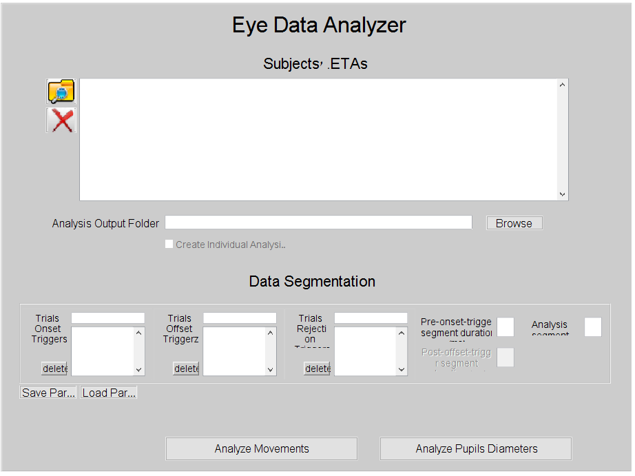

Contents
function eyeTrackerAnalyzer()
Overview
EyeTrackerAnalyzer is a tool dedicated to analyzing eye tracking data, that can be interfaced via an API (Application Programming Interface - A bundle of MATLAB functions that constitute EyeTrackerAnalyzer's operations), or via a MATLAB GUI (Graphical User Interface). With EyeTrackerAnalyzer you can extract from the eye tracking data the following elements:
- saccades - rapid eye movements. calculated variables per saccade:
- onset
- duration
- amplitude
- direction
- velocity
- fixations - defined as segments of valid eye samples that are not part of a saccade. calculated variables per fixation:
- onset
- duration
- position
- pupils sizes - as reported directly by eye trackers.
- blinks - can be extracted directly as reported directly by eye trackers or based on the pupil sizes data.
EyeTrackerAnalyzer also generates various figures:
- saccadic rate - the chance for a saccade onset on every trial sample
- average saccade amplitude per direction (polar graph)
- saccades number per direction (polar graph)
- main sequence - saccade amplitude as a function of saccade velocity
The usage pipeline with EyeTrackerAnalyzer is as follows:
- Package the different subjects' data files inside .ETA files with which EyeTrackerAnalyzer operates.
- Assign data segmentation parameters values - Data segmentation is the process of cutting out data segments during which events of interest have happened.
- Assign analysis parameters values - these include the saccades extraction algorithms parameters, data pre-processing parameters, etc.
- optional: traverse the data trial by trial and inspect the saccades and blinks found by EyeTrackerAnalyzer as well as cancel false findings and manually mark new ones.
The GUI consists of 4 main panes:
- Analysis Pane - Holds segmentaion and analysis parameters controls. through this pane one starts the analysis.
- Packaging of multiple data files per subject pane - enables to group multiple eye tracker data files for each subject, and create a single .ETA for each.
- Packaging of single data files per subject pane - enables to read a folder containing eye tracking data files and generate a single .ETA per file read;
- Raw eye tracking data extraction pane - enables generating a MATLAB .mat file holding raw eye tracking data from an eye tracking data file.
Analysis Pane
subjects' .ETAs Panel --------------------- Here one specifies the .ETAs files on which to run the chosen analysis. To add files to the panel, press on the folder with spy glass icon to the left of the panel. Multiple files can be selected at one time. To remove files from the panel, select the files to be removed (to select more than one file, left click on the file names while holding the shift button or the ctrl button), and click on the red X icon to the left of the panel.
Analysis Output Folder ---------------------- Here you specify a folder inside which all the analysis output files will be saved. To choose a folder press the 'Browse' button.
Data Segmentation Panel ----------------------- Here one inputs the segmentation parameters
- Trials Onset Triggers - These are the messages sent during the eyes recording that will define the beginning of an analysis segment. (!) Important: The different onset Triggers are used to define the conditions to which to assign the corresponding segments.
- Trials Offset Triggers - These are the messages sent during the eyes recording that will define the ending of an analysis segment.
- Trials Rejection Triggers - These are the messages sent during the eyes recording that will signal EyeTrackerAnalyzer to drop a segment during which the message was sent (should such a segment was found).
The interface for inputing triggers is the same: To add a trigger - enter the trigger in the field above the corresponding list pane. To remove triggers - select the triggers to be removed (to select more than one trigger, left click on the triggers while holding the shift button or the ctrl button), and press 'Delete' (found to the left of the corresponding Pane).
(!) Multiple-Triggers-One-Condition: It is also possible to have different triggers define the same condition, and thus have their corresponding segments assigned to the same condition. To achieve this goal, we use a regex (regular expression. for more info see https://en.wikipedia.org/wiki/Regular_expression and https://regexr.com/) do define a messages pattern. All messages that fit this pattern will be counted as corresponding to the same condition.
- Pre-onset-trigger segment duration - An extra period of data to attach to each segment right before the segment's onset.
- Post-offset-trigger segment duration - An extra period of data to attach to each segment right after the segment's offset.
- Analysis segment duration -
%====================================% %=== GUI PARAMETERS AND CONSTANTS ===% %====================================% MAIN_FIGURE_TITLE= 'Eye Data Analyzer'; GUI_BACKGROUND_COLOR= [0.8, 0.8, 0.8]; READ_EDF_PATH= 'readEDF'; ETAS_FOLDER_NAME = 'Eye Tracking Analysis Files'; ANALYSIS_RESULTS_FOLDER_NAME= 'Analysis Figures'; LOGGER_FILE_NAME_EXTENDED = 'error_log.txt'; % parameters are saved in an xml format % the following constants store the xml nodes names TRIALS_ONSET_TRIGGERS_XML_NODE_NAME = 'TRIALS_ONSETS_TRIGGERS'; TRIALS_OFFSETS_TRIGGERS_XML_NODE_NAME = 'TRIALS_OFFSETS_TRIGGERS'; TRIALS_REJECTION_TRIGGERS_XML_NODE_NAME = 'TRIALS_REJECTION_TRIGGERS'; PRE_ONSET_TRIGGER_SEGMENT_XML_NODE_NAME = 'PRE_ONSET_TRIGGER_SEGMENT'; POST_OFFSET_TRIGGER_SEGMENT_XML_NODE_NAME = 'POST_OFFSET_TRIGGER_SEGMENT'; ANALYSIS_SEGMENT_DUR_XML_NODE_NAME = 'ANALYSIS_SEGMENT_DUR'; MICROSACCADES_ANALYSIS_PARAMS_NODE_NAME = 'SACCADES_ANALYSIS_PARAMS'; MICROSACCADES_ANALYSIS_PLOT_RATE_XML_NODE_NAME = 'PLOT_RATE'; MICROSACCADES_ANALYSIS_PLOT_AMPS_XML_NODE_NAME = 'PLOT_AMPS'; MICROSACCADES_ANALYSIS_PLOT_DIRECTIONS_XML_NODE_NAME = 'PLOT_DIRECTIONS'; MICROSACCADES_ANALYSIS_PLOT_MAIN_SEQ_XML_NODE_NAME = 'PLOT_MAIN_SEQ'; MICROSACCADES_ANALYSIS_GEN_SINGLE_GRAPHS_XML_NODE_NAME = 'GEN_SINGLE_GRAPHS'; MICROSACCADES_ANALYSIS_GEN_GROUP_GRAPHS_SEQ_XML_NODE_NAME = 'GEN_GROUP_GRAPHS'; MICROSACCADES_ANALYSIS_SMOOTHING_WINDOW_LEN_XML_NODE_NAME = 'SMOOTHING_WINDOW_LEN'; MICROSACCADES_ANALYSIS_BLINKS_DELTA_XML_NODE_NAME = 'BLINKS_DELTA'; MICROSACCADES_ANALYSIS_BDAF_XML_NODE_NAME = 'BLINKS_DETECTION_ALGOS_FLAG'; MICROSACCADES_ANALYSIS_AMP_LIM_XML_NODE_NAME = 'AMP_LIM'; MICROSACCADES_ANALYSIS_AMP_LOW_LIM_XML_NODE_NAME = 'AMP_LOW_LIM'; MICROSACCADES_ANALYSIS_VEL_VEC_TYPE_XML_NODE_NAME = 'VEL_VEC_TYPE'; MICROSACCADES_ANALYSIS_VEL_THRESHOLD_XML_NODE_NAME = 'VEL_THRESHOLD'; MICROSACCADES_ANALYSIS_SACCADE_DUR_MIN_XML_NODE_NAME = 'SACCADE_DUR_MIN'; MICROSACCADES_ANALYSIS_FREQ_MAX_XML_NODE_NAME = 'FREQ_MAX'; MICROSACCADES_ANALYSIS_FILTER_BANDPASS_XML_NODE_NAME = 'FILTER_BANDPASS'; % the delimiter that seperates the triggers in the triggers lists stored in % the xml TRIGGERS_XML_DELIMITER = '&%$#'; % default degrees per pixel DPP= 1/60; % maximum number of panes openned at one time in the % 'create .ETAs - multi sessioned' screen MAX_SUBJECTS_NR_FOR_ETAS_CREATION= 10; % global variables to store the parameters TRIAL_ONSET_TRIGGERS= []; TRIAL_OFFSET_TRIGGERS = []; TRIAL_REJECTION_TRIGGERS = []; TRIAL_DURATION= []; BASELINE= []; POST_OFFSET_TRIGGERS_SEGMENT = []; FILES_SAVE_DESTINATION= ''; ETAS_CREATION_SINGLE_SESSIONED_SAVE_DESTINATION= ''; FILES_FORMATS_CONVERSION_SAVE_DESTINATION= ''; ANALYSIS_RESULTS_FILE_DESTINATION= ''; SPLIT_ANALYSIS_RESULTS_TO_SUBJECTS = false; ANALYSIS_PARAMS_FILES_FOLDER= ''; ANALYSIS_PARAMS_FILE_NAME = ''; PERFORM_EYEBALLING= 1; EYEBALLER_DISPLAY_RANGE = 2.2; EYE_EEG_DATA_SYNC_SAVE_FOLDER= []; CURR_FILE_LOAD_FOLDER= pwd; MICROSACCADES_PARAMETERS_FIG= []; BLINKS_PARAMETERS_FIG= []; %ERROR MESSAGES ERROR_MSG_NO_TRIGGERS= 'Please specify trial start triggers'; ERROR_MSG_NO_TRIAL_DUR= 'Please specify trial duration'; ERROR_MSG_NO_SUBJECTS= 'Please load at least one eye tracker data file'; ERROR_MSG_NO_BASELINE= 'Please specify baseline'; ERROR_MSG_NO_INPUT_FILES= 'Please specify at least one input file'; ERROR_MSG_NO_OUTPUT_FOLDER= 'Please specify output folder'; ERROR_MSG_NO_CHOSEN_ANALYSES= 'Please choose at least one analysis to save'; ERROR_MSG_NO_BLINKS_DELTA= 'Please specify blinks''s delta'; ERROR_MSG_NO_VEL_THRESHOLD= 'Please specify microsaccade''s velocity threshold'; ERROR_MSG_NO_AMP_LIM= 'Please specify microsaccade''s amplitude limit'; ERROR_MSG_MISSING_ETA_SAVE_FILE_NAMES= 'Please choose save names for all .ETA files'; % ALGORITHMS DEFAULT PARAMETERS VALUES MICROSACCADES_ANALYSIS_PARAMETERS.rate= 1; MICROSACCADES_ANALYSIS_PARAMETERS.amplitudes= 1; MICROSACCADES_ANALYSIS_PARAMETERS.directions= 1; MICROSACCADES_ANALYSIS_PARAMETERS.main_sequence= 1; MICROSACCADES_ANALYSIS_PARAMETERS.gen_single_graphs = 1; MICROSACCADES_ANALYSIS_PARAMETERS.gen_group_graphs = 1; MICROSACCADES_ANALYSIS_PARAMETERS.smoothing_window_len= 50; MICROSACCADES_ANALYSIS_PARAMETERS.blinks_delta= 200; MICROSACCADES_ANALYSIS_PARAMETERS.blinks_detection_algos_flags = [1,0]; ENGBERT_ALGORITHM_DEFAULTS.amp_lim= 1; ENGBERT_ALGORITHM_DEFAULTS.amp_low_lim = 0.1; ENGBERT_ALGORITHM_DEFAULTS.vel_vec_type= 1; ENGBERT_ALGORITHM_DEFAULTS.vel_threshold= 6; ENGBERT_ALGORITHM_DEFAULTS.saccade_dur_min= 6; ENGBERT_ALGORITHM_DEFAULTS.frequency_max= 50; ENGBERT_ALGORITHM_DEFAULTS.do_filter = true; ENGBERT_ALGORITHM_DEFAULTS.filter_bandpass= 60; %==================% %=== UICONTROLS ===% %==================% %CREATE MAIN FIGURE screen_size= get(0,'monitorpositions'); if any(screen_size(1)<0) screen_size= get(0,'ScreenSize'); end screen_size= screen_size(1,:); main_figure_positions= round([0.2*screen_size(3), -0.2*screen_size(4), 0.6*screen_size(3), 0.8*screen_size(4)]); gui= figure('Visible', 'off', 'name', MAIN_FIGURE_TITLE, 'NumberTitle', 'off', 'units', 'pixels', ... 'Position', main_figure_positions, ... 'MenuBar', 'none', ... 'color', GUI_BACKGROUND_COLOR, ... 'DeleteFcn', @guiCloseCallback, ... 'userdata', pwd); menu_bar= uimenu(gui,'Label','Action'); analyze_micro_saccades_uimenu_handle= uimenu(menu_bar,'Label','Eye Data Analysis', 'checked', 'on', 'callback', @guiActionSelectedAnalyzeMicroSaccades); etas_creation_multi_sessioned_uimenu_handle= uimenu(menu_bar,'Label','Create .ETAs - Multi Sessioned', 'callback', @guiActionSelectedCreateEtasMultiSessioned); etas_creation_single_sessioned_uimenu_handle= uimenu(menu_bar,'Label','Create .ETAs - Single Sessioned', 'callback', @guiActionSelectedCreateEtasSingleSessioned); convert_files_formats_uimenu_handle= uimenu(menu_bar,'Label','Extract Eye Data As .MAT', 'callback', @guiActionSelectedConvertFileFormats); %eye_eeg_data_sync_uimenu_handle= uimenu(menu_bar,'Label','Eye & EEG Data Merged Analysis - primal', 'callback', @guiActionSelectedEyeEegDataSync); analyze_microsaccades_panel= uipanel(gui, 'tag', 'p1', 'units', 'normalized', ... 'Position',[0.0026 0.0093 0.9928 0.9851], ... 'visible', 'on', ... 'BackgroundColor', GUI_BACKGROUND_COLOR); uicontrol(analyze_microsaccades_panel, 'Style','text', 'tag', 'c15', 'units', 'normalized', ... 'String', 'Eye Data Analyzer', ... 'Position', [0.2984 0.9030 0.4158 0.0818], ... 'FontSize', 24.0, ... 'BackgroundColor', GUI_BACKGROUND_COLOR); %LOAD SUBJECTS' .ETAs FOR ANALYSIS UICONTROLS img = imread('resources/Folder-Explorer-icon.png','png'); folder_icon_img_data= imresize(img, 0.25); %img= imread('resources/numbers_column.png','png'); %numbers_list_img_data= imresize(img, 0.13); img= imread('resources/X-icon.png','png'); x_icon_img_data= imresize(img, 0.4); subjects_nr= 0; uicontrol(analyze_microsaccades_panel, 'Style', 'text', 'tag', 'c5', 'units', 'normalized', ... 'String', 'Subjects'' .ETAs', ... 'Position', [0.3498 0.8490 0.3000 0.0425], ... 'FontSize', 16.0, ... 'BackgroundColor', GUI_BACKGROUND_COLOR); uicontrol(analyze_microsaccades_panel, 'Style', 'pushbutton', 'tag', 'c6', 'units', 'normalized', ... 'Position', [0.0699 0.7839 0.0494 0.0551], ... 'CData', imresize(folder_icon_img_data,1.2), ... 'callback', {@loadEtasForAnalysisBtnCallback}); uicontrol(analyze_microsaccades_panel, 'Style', 'pushbutton', 'tag', 'c7', 'units', 'normalized', ... 'Position', [0.0699 0.7225 0.0494 0.0551], ... 'CData', imresize(x_icon_img_data,1.2), ... 'callback', {@clearEtasForAnalysisBtnCallback}); load_etas_for_analysis_display_pane= uicontrol(analyze_microsaccades_panel, 'Style', 'listbox', 'tag', 'c99', 'units', 'normalized', ... 'max', 2, 'string', {}, 'FontSize', 12.0, ... 'Position', [0.1235 0.5773 0.7792 0.2626]); uicontrol(analyze_microsaccades_panel, 'Style', 'text', 'tag', 'c70', 'units', 'normalized', ... 'String', 'Data Segmentation Parameters', ... 'Position', [0.3468 0.3830 0.3000 0.0425], ... 'FontSize', 16.0, ... 'BackgroundColor', GUI_BACKGROUND_COLOR); segmentation_panel= uipanel(analyze_microsaccades_panel, 'tag', 'p4', 'units', 'normalized', ... 'Position', [0.0273 0.1870 0.9416 0.1714], ... 'visible', 'on', ... 'BackgroundColor', GUI_BACKGROUND_COLOR); trials_onset_triggers_button_group= uipanel(segmentation_panel, 'tag', 'c9', ... 'Position', [0.0033 0.0360 0.2206 0.9063], ... 'Background', GUI_BACKGROUND_COLOR, ... 'BorderWidth', 0); uicontrol(trials_onset_triggers_button_group, 'Style','text', 'units', 'normalized', ... 'String', 'Trials Onset Triggers', ... 'Position', [0.05, 0.4533, 0.3, 0.5], ... 'FontSize', 10.0, ... 'BackgroundColor', GUI_BACKGROUND_COLOR); trials_onset_triggers_display= uicontrol(trials_onset_triggers_button_group, 'Style', 'listbox', 'units', 'normalized', ... 'max', 2, 'string', {}, 'FontSize', 12.0, ... 'Position', [0.38, 0.05, 0.57, 0.7]); uicontrol(trials_onset_triggers_button_group, 'Style', 'pushbutton', 'units', 'normalized', ... 'String', 'delete', ... 'Position', [0.15, 0.05, 0.2, 0.2], ... 'FontSize', 10.0, ... 'BackgroundColor', GUI_BACKGROUND_COLOR, .... 'callback', {@deleteNumFromGroupCallback, trials_onset_triggers_display}); uicontrol(trials_onset_triggers_button_group, 'Style', 'edit', 'units', 'normalized', ... 'Position', [0.38, 0.78, 0.57, 0.17], 'FontSize', 12.0, ... 'callback', {@addStrToGroupCallback, trials_onset_triggers_display}); trials_offset_triggers_button_group= uipanel(segmentation_panel, 'tag', 'c72', ... 'Position', [0.22635 0.0360 0.2206 0.9063], ... 'Background', GUI_BACKGROUND_COLOR, ... 'BorderWidth', 0); uicontrol(trials_offset_triggers_button_group, 'Style','text', 'units', 'normalized', ... 'String', 'Trials Offset Triggerz', ... 'Position', [0.05, 0.4533, 0.3, 0.5], ... 'FontSize', 10.0, ... 'BackgroundColor', GUI_BACKGROUND_COLOR); trials_offset_triggers_display= uicontrol(trials_offset_triggers_button_group, 'Style', 'listbox', 'units', 'normalized', ... 'max', 2, 'string', {}, 'FontSize', 12.0, ... 'Position', [0.38, 0.05, 0.57, 0.7]); uicontrol(trials_offset_triggers_button_group, 'Style', 'pushbutton', 'units', 'normalized', ... 'String', 'delete', ... 'Position', [0.15, 0.05, 0.2, 0.2], ... 'FontSize', 10.0, ... 'BackgroundColor', GUI_BACKGROUND_COLOR, .... 'callback', {@deleteNumFromGroupCallback, trials_offset_triggers_display}); uicontrol(trials_offset_triggers_button_group, 'Style', 'edit', 'units', 'normalized', ... 'Position', [0.38, 0.78, 0.57, 0.17], 'FontSize', 12.0, ... 'callback', {@addStrToGroupCallback, trials_offset_triggers_display}); trials_rejection_triggers_button_group= uipanel(segmentation_panel, 'tag', 'c75', ... 'Position', [0.4494 0.0360 0.2206 0.9063], ... 'Background', GUI_BACKGROUND_COLOR, ... 'BorderWidth', 0); uicontrol(trials_rejection_triggers_button_group, 'Style','text', 'units', 'normalized', ... 'String', 'Trials Rejection Triggers', ... 'Position', [0.05, 0.4533, 0.3, 0.5], ... 'FontSize', 10.0, ... 'BackgroundColor', GUI_BACKGROUND_COLOR); trials_rejection_triggers_display= uicontrol(trials_rejection_triggers_button_group, 'Style', 'listbox', 'units', 'normalized', ... 'max', 2, 'string', {}, 'FontSize', 12.0, ... 'Position', [0.38, 0.05, 0.57, 0.7]); uicontrol(trials_rejection_triggers_button_group, 'Style', 'pushbutton', 'units', 'normalized', ... 'String', 'delete', ... 'Position', [0.15, 0.05, 0.2, 0.2], ... 'FontSize', 10.0, ... 'BackgroundColor', GUI_BACKGROUND_COLOR, .... 'callback', {@deleteNumFromGroupCallback, trials_rejection_triggers_display}); uicontrol(trials_rejection_triggers_button_group, 'Style', 'edit', 'units', 'normalized', ... 'Position', [0.38, 0.78, 0.57, 0.17], 'FontSize', 12.0, ... 'callback', {@addStrToGroupCallback, trials_rejection_triggers_display}); uicontrol(segmentation_panel, 'Style', 'text', 'tag', 'c12', 'units', 'normalized', ... 'String', 'Pre-onset-trigger segment duration (ms)', ... 'Position', [0.6798, 0.5228, 0.1198, 0.3254], ... 'FontSize', 10.0, ... 'BackgroundColor', GUI_BACKGROUND_COLOR); pre_onset_trigger_segment_edit_uicontrol = uicontrol(segmentation_panel, 'Style', 'edit', 'tag', 'c13', 'units', 'normalized', ... 'Position', [0.8081 0.57667 0.0304 0.2556], ... 'callback', {@baseLineEditedCallback}); post_offset_trigger_segment_txt_uicontrol = uicontrol(segmentation_panel, 'Style', 'text', 'tag', 'c73', 'units', 'normalized', ... 'String', 'Post-offset-trigger segment duration (ms)', ... 'Position', [0.6799, 0.1479, 0.1198, 0.3114], ... 'FontSize', 10.0, ... 'Enable', 'off', ... 'BackgroundColor', GUI_BACKGROUND_COLOR); post_offset_trigger_segment_edit_uicontrol = uicontrol(segmentation_panel, 'Style', 'edit', 'tag', 'c74', 'units', 'normalized', ... 'Position', [0.8081 0.1882 0.0304 0.2556], ... 'Enable', 'off', ... 'callback', {@postOffsetTriggerTimeEditedCallback}); analysis_segment_dur_txt_uicontrol = uicontrol(segmentation_panel, 'Style', 'text', 'tag', 'c10', 'units', 'normalized', ... 'String', 'Analysis segment duration (ms)', ... 'Position', [0.8534 0.5947 0.0896 0.2158], ... 'FontSize', 10.0, ... 'BackgroundColor', GUI_BACKGROUND_COLOR); analysis_segment_dur_edit_uicontrol = uicontrol(segmentation_panel, 'Style', 'edit', 'tag', 'c11', 'units', 'normalized', ... 'Position', [0.95691 0.57667 0.0304 0.2556], ... 'callback', {@trialDurationEditedCallback}); uicontrol('Style', 'pushbutton', 'tag', 'sp', 'units', 'normalized', ... 'String', 'Save Parameters', ... 'Position', [0.0305 0.1618 0.0907 0.0287], ... 'FontSize', 12.0, ... 'callback', @saveParamsBtnCallback); uicontrol('Style', 'pushbutton', 'tag', 'lp', 'units', 'normalized', ... 'String', 'Load Parameters', ... 'Position', [0.1260 0.1618 0.0907 0.0287], ... 'FontSize', 12.0, ... 'callback', @loadParamsBtnCallback); %ANALYSIS SAVE FOLDER UICONTROLS uicontrol(analyze_microsaccades_panel, 'Style', 'text', 'tag', 'c95', 'units', 'normalized', ... 'String', 'Analysis Output Folder', ... 'Position', [0.075 0.5146 0.18 0.0300], ... 'FontSize', 12.0, ... 'BackgroundColor', GUI_BACKGROUND_COLOR); uicontrol(analyze_microsaccades_panel, 'Style', 'pushbutton', 'tag', 'c16', 'units', 'normalized', ... 'String', 'Browse', ... 'Position', [0.7708 0.5153 0.0908 0.031], ... 'FontSize', 12.0, ... 'callback', {@saveFolderBtnCallback}); save_file_folder_etext= uicontrol(analyze_microsaccades_panel, 'Style', 'edit', 'tag', 'c17', 'units', 'normalized', ... 'enable', 'inactive', 'Position', [0.2591 0.5151 0.4900 0.0316]); split_analysis_results_checkbox = uicontrol(analyze_microsaccades_panel, 'Style', 'checkbox', 'tag', 'c96', 'units', 'normalized', ... 'FontSize', 10.0, 'String', 'Create Individual Analysis Structs', ... 'Position', [0.2583 0.4698 0.1929 0.0318], ... 'BackgroundColor', GUI_BACKGROUND_COLOR, ... 'value', false, ... 'Enable', 'off', ... 'callback', {@splitAnalysisResultsEditedCallback}); %RUN ANALYSES UICONTROLS uicontrol(analyze_microsaccades_panel, 'Style', 'pushbutton', 'tag', 'msb', 'units', 'normalized', ... 'String', 'Analyze Movements', ... 'Position', [0.2597 0.0212 0.3066 0.0519], ... 'FontSize', 12.0, ... 'callback', {@runAnalysisBtnCallback, @analyzeMicrosaccades, @microsaccadesParametersFigCreator, 'analyzing saccades'}); uicontrol(analyze_microsaccades_panel, 'Style', 'pushbutton', 'tag', 'fb', 'units', 'normalized', ... 'String', 'Analyze Pupils Diameters', ... 'Position', [0.6017 0.0212 0.3066 0.0519], ... 'FontSize', 12.0, ... 'callback', {@runAnalysisBtnCallback, @analyzePupilsSz, [], 'Analyzing Pupils Size'}); uicontrol(analyze_microsaccades_panel, 'Style', 'pushbutton', 'tag', 'bb', 'units', 'normalized', ... 'String', 'Analyze Blinks', ... 'Position', [0.4417 0.0212 0.2066 0.0519], ... 'FontSize', 12.0, 'visible', 'off', ... 'callback', {@runAnalysisBtnCallback, @analyzeBlinks, @blinksParametersFigCreator, 'analyzing blinks'}); %CREATE ETAS MULTI SESSIONED PRIMAL UICONTROLS img = imread('resources/save_file.png','png'); save_file_icon_img_data= imresize(img, 0.2); requested_etas_nr= 0; etas_creation_multi_sessioned_panel= uipanel(gui, 'tag', 'p2', 'units', 'normalized', ... 'Position',[0.0026 0.0093 0.9928 0.9851], ... 'visible', 'off', ... 'BackgroundColor', GUI_BACKGROUND_COLOR); uicontrol(etas_creation_multi_sessioned_panel, 'Style', 'text', 'tag', 'c100', 'units', 'normalized', ... 'String', 'Create .ETAs From Eye tracking Files', ... 'Position', [0.219083157894736,0.917018654073199,0.678953215916113,0.05883619309983], ... 'FontSize', 24.0, ... 'BackgroundColor', GUI_BACKGROUND_COLOR); data_files_listbox_primal= uicontrol(etas_creation_multi_sessioned_panel, 'Style', 'listbox', 'tag', 'c101', 'units', 'normalized', ... 'Position', [0.0751 0.7426 0.3828 0.0921], 'max', 2, 'string', {}); eta_save_file_etext_primal= uicontrol(etas_creation_multi_sessioned_panel, 'Style', 'edit', 'tag', 'c201', 'units', 'normalized', ... 'enable', 'inactive', 'max', 2, 'FontSize', 12, ... 'HorizontalAlignment', 'left', ... 'Position', [0.0751 0.8353 0.3828 0.0450]); % eta_save_file_etext_primal_jcp= findjobj(eta_save_file_etext_primal); % eta_save_file_etext_primal_jcp_java_internal_edit_control= eta_save_file_etext_primal_jcp.getComponent(0).getComponent(0); % set(eta_save_file_etext_primal_jcp_java_internal_edit_control,'Editable',0); eta_save_btn_primal= uicontrol(etas_creation_multi_sessioned_panel, 'Style', 'pushbutton', 'tag', 'c301', 'units', 'normalized', 'Enable', 'off', ... 'Position', [0.0368 0.8353 0.0340 0.0450], ... 'CData', save_file_icon_img_data, ... 'callback', {@etaMultiSessionedSaveBtnCallback}, ... 'UserData', eta_save_file_etext_primal); load_data_file_btn_primal= uicontrol(etas_creation_multi_sessioned_panel, 'Style', 'pushbutton', 'tag', 'c401', 'units', 'normalized', ... 'Position', [0.0368 0.7886 0.0340 0.0450], ... 'CData', folder_icon_img_data, ... 'callback', {@loadFileForEtaCreationMultiSessionedBtnCallback}, ... 'UserData', {data_files_listbox_primal, eta_save_btn_primal, eta_save_file_etext_primal} ); clear_data_file_btn_primal= uicontrol(etas_creation_multi_sessioned_panel, 'Style', 'pushbutton', 'tag', 'c501', 'units', 'normalized', ... 'Position', [0.0368 0.7426 0.0340 0.0450], ... 'CData', x_icon_img_data, ... 'callback', {@clearFileForEtaCreationMultiSessionedBtnCallback}, ... 'UserData', {data_files_listbox_primal, eta_save_btn_primal} ); set(data_files_listbox_primal, 'UserData', 1); load_data_files_uicontrols(requested_etas_nr+1, 1:5)= {data_files_listbox_primal, eta_save_file_etext_primal, eta_save_btn_primal, load_data_file_btn_primal, clear_data_file_btn_primal}; uicontrol(etas_creation_multi_sessioned_panel, 'Style', 'pushbutton', 'tag', 'cemsfeb', 'units', 'normalized', ... 'String', 'Create', ... 'Position', [0.6253 0.0540 0.3595 0.0729], ... 'FontSize', 20.0, ... 'callback', {@createEtasMultiSessionedFromEyeTrackerFilesBtnCallback}); uicontrol(etas_creation_multi_sessioned_panel, 'Style', 'pushbutton', 'tag', 'caecpb', 'units', 'normalized', ... 'String', 'Clear All', ... 'Position', [0.4806 0.0540 0.1233 0.0730], ... 'FontSize', 20.0, ... 'callback', {@clearAllEtaCreationPanelsBtnCallback}); %RECORDING PARAMETERS UICONTROLS %recording_parameters_buttons_group= uipanel(etas_creation_multi_sessioned_panel, 'tag', 'p10', 'units', 'normalized', ... % 'Position',[0.1796 0.0170 0.2772 0.1096], ... % 'visible', 'on', ... % 'BackgroundColor', GUI_BACKGROUND_COLOR); uicontrol(etas_creation_multi_sessioned_panel, 'Style','text', 'tag', 'c4.0', 'units', 'normalized', ... 'String', 'Experiment Screen''s Pixels Per Visual Degree', ... 'Position', [0.0541 0.0615 0.2192 0.0545], ... 'FontSize', 14.0, ... 'BackgroundColor', GUI_BACKGROUND_COLOR); uicontrol(etas_creation_multi_sessioned_panel, 'Style', 'edit', 'tag', 'c4.1', 'units', 'normalized', ... 'string', 1/DPP, ... 'Position', [0.31189 0.069202 0.0668 0.0486], 'FontSize', 12.0, ... 'callback', @dppEditedCallback); %CREATE ETAS SINGLE SESSIONED PRIMAL UICONTROLS etas_creation_single_sessioned_panel= uipanel(gui, 'tag', 'p3', 'units', 'normalized', ... 'Position',[0.0026 0.0093 0.9928 0.9851], ... 'visible', 'off', ... 'BackgroundColor', GUI_BACKGROUND_COLOR); uicontrol(etas_creation_single_sessioned_panel, 'Style', 'text', 'tag', 'c100', 'units', 'normalized', ... 'String', 'Create .ETAs From Eye tracking Files', ... 'Position', [0.215574385964911, 0.899309090909091, 0.628076022933653, 0.071823206086844], ... 'FontSize', 24.0, ... 'BackgroundColor', GUI_BACKGROUND_COLOR); load_files_for_etas_creation_single_sessioned_display_pane= uicontrol(etas_creation_single_sessioned_panel, 'Style', 'listbox', 'tag', 'c99', 'units', 'normalized', ... 'max', 2, 'string', {}, 'FontSize', 12.0, ... 'Position', [0.1235 0.5773 0.7792 0.2626]); uicontrol(etas_creation_single_sessioned_panel, 'Style', 'text', 'tag', 'c600', 'units', 'normalized', ... 'String', 'Subjects'' Eye Data Files', ... 'Position', [0.3498 0.8490 0.3000 0.0425], ... 'FontSize', 16.0, ... 'BackgroundColor', GUI_BACKGROUND_COLOR); uicontrol(etas_creation_single_sessioned_panel, 'Style', 'pushbutton', 'tag', 'c601', 'units', 'normalized', ... 'Position', [0.0699 0.7839 0.0494 0.0551], ... 'CData', imresize(folder_icon_img_data,1.2), ... 'callback', {@loadFileForEtaCreationSingleSessionedBtnCallback}); uicontrol(etas_creation_single_sessioned_panel, 'Style', 'pushbutton', 'tag', 'c602', 'units', 'normalized', ... 'Position', [0.0699 0.7225 0.0494 0.0551], ... 'CData', imresize(x_icon_img_data,1.2), ... 'callback', {@clearFilesForEtaCreationSingleSessionedBtnCallback}); uicontrol(etas_creation_single_sessioned_panel, 'Style', 'text', 'tag', 'c95', 'units', 'normalized', ... 'String', 'Save Folder', ... 'Position', [0.1438 0.5146 0.1186 0.0300], ... 'FontSize', 12.0, ... 'BackgroundColor', GUI_BACKGROUND_COLOR); uicontrol(etas_creation_single_sessioned_panel, 'Style', 'pushbutton', 'tag', 'c16', 'units', 'normalized', ... 'String', 'Browse', ... 'Position', [0.7708 0.5153 0.0908 0.031], ... 'FontSize', 12.0, ... 'callback', {@browseEtasCreationSingleSessionedBtnCallback}); etas_creation_single_sessioned_folder_etext= uicontrol(etas_creation_single_sessioned_panel, 'Style', 'edit', 'tag', 'c17', 'units', 'normalized', ... 'enable', 'inactive', 'Position', [0.2591 0.5151 0.4900 0.0316]); uicontrol(etas_creation_single_sessioned_panel, 'Style', 'pushbutton', 'tag', 'cessfeb', 'units', 'normalized', ... 'String', 'Create', ... 'Position', [0.3159 0.0529 0.3595 0.0729], ... 'FontSize', 20.0, ... 'callback', {@createEtasSingleSessionedFromEyeTrackerFilesBtnCallback}); %EXTRACT EYE DATA .MAT FILE UICONTROLS convert_files_formats_panel= uipanel(gui, 'tag', 'p4', 'units', 'normalized', ... 'Position', [0.0026 0.0093 0.9928 0.9851], ... 'visible', 'off', ... 'BackgroundColor', GUI_BACKGROUND_COLOR); uicontrol(convert_files_formats_panel, 'Style', 'text', 'tag', 'c708', 'units', 'normalized', ... 'String', 'Extract Eye Data As .mat', ... 'Position', [0.2710 0.9101 0.4158 0.0425], ... 'FontSize', 24.0, ... 'BackgroundColor', GUI_BACKGROUND_COLOR); uicontrol(convert_files_formats_panel, 'Style', 'text', 'tag', 'c46', 'units', 'normalized', ... 'String', '.edf -> .mat extraction', ... 'Position', [0.0228 0.5796 0.3184 0.0378], ... 'FontSize', 20.0, ... 'BackgroundColor', GUI_BACKGROUND_COLOR); convert_edf_listbox= uicontrol(convert_files_formats_panel, 'Style', 'listbox', 'tag', 'c40', 'units', 'normalized', ... 'Position', [0.4018 0.5349 0.3965 0.1156], 'FontSize', 12, 'max', 2, 'string', {}); uicontrol(convert_files_formats_panel, 'Style', 'pushbutton', 'tag', 'c41', 'units', 'normalized', ... 'Position', [0.3473 0.5938 0.0525 0.0569], ... 'CData', imresize(folder_icon_img_data,1.35), ... 'callback', {@loadEDFConversionFileBtnCallback}); uicontrol(convert_files_formats_panel, 'Style', 'pushbutton', 'tag', 'c42', 'units', 'normalized', ... 'Position', [0.3473 0.5349 0.0525 0.0569], ... 'CData', imresize(x_icon_img_data,1.35), ... 'callback', {@clearEDFConversionFileBtnCallback}); uicontrol(convert_files_formats_panel, 'Style', 'text', 'tag', 'c804', 'units', 'normalized', ... 'String', '.eta -> .mat extraction', ... 'Position', [0.0228 0.7673 0.3184 0.0378], ... 'FontSize', 20.0, ... 'BackgroundColor', GUI_BACKGROUND_COLOR); convert_eta_listbox= uicontrol(convert_files_formats_panel, 'Style', 'listbox', 'tag', 'c805', 'units', 'normalized', ... 'Position', [0.4018 0.7202 0.3965 0.1156], 'FontSize', 12, 'max', 2, 'string', {}); uicontrol(convert_files_formats_panel, 'Style', 'pushbutton', 'tag', 'c806', 'units', 'normalized', ... 'Position', [0.3473 0.7792 0.0525 0.0569], ... 'CData', imresize(folder_icon_img_data,1.35), ... 'callback', {@loadEtaConversionFileBtnCallback}); uicontrol(convert_files_formats_panel, 'Style', 'pushbutton', 'tag', 'c807', 'units', 'normalized', ... 'Position', [0.3473 0.7202 0.0525 0.0569], ... 'CData', imresize(x_icon_img_data,1.35), ... 'callback', {@clearEtaConversionFileBtnCallback}); uicontrol(convert_files_formats_panel, 'Style', 'text', 'tag', 'c43', 'units', 'normalized', ... 'String', 'Save Folder', ... 'Position', [0.0517 0.2550 0.1266 0.0373], ... 'FontSize', 12.0, ... 'BackgroundColor', GUI_BACKGROUND_COLOR); convert_edf_save_folder_etext= uicontrol(convert_files_formats_panel, 'Style', 'edit', 'tag', 'c44', 'units', 'normalized', ... 'Position', [0.1772 0.2526 0.6193 0.0411], 'FontSize', 12.0); uicontrol(convert_files_formats_panel, 'Style', 'pushbutton', 'tag', 'c45', 'units', 'normalized', ... 'String', 'Browse', ... 'Position', [0.8148 0.2514 0.1247 0.0431], ... 'FontSize', 14.0, ... 'callback', {@convertFilesFormatsSaveFolderBtnCallback}); uicontrol(convert_files_formats_panel, 'Style', 'pushbutton', 'tag', 'cffb', 'units', 'normalized', ... 'String', 'Extract', ... 'Position', [0.3219 0.0932 0.3070 0.0832], ... 'FontSize', 20.0, ... 'callback', {@convertFilesFormatsBtnCallback}); %SHOW THE GUI set(gui, 'Visible', 'on'); %=================% %=== CALLBACKS ===% %=================% function guiActionSelectedAnalyzeMicroSaccades(~,~) setEtasCreationMultiSessionedScreenVisiblity(false); setEtasCreationSingleSessionedScreenVisiblity(false); setConvertFilesFormatsScreenVisiblity(false); setAnalyzeMicrosaccadesScreenVisiblity(true); end function guiActionSelectedConvertFileFormats(~,~) setAnalyzeMicrosaccadesScreenVisiblity(false); setEtasCreationMultiSessionedScreenVisiblity(false); setEtasCreationSingleSessionedScreenVisiblity(false); setConvertFilesFormatsScreenVisiblity(true); end function guiActionSelectedCreateEtasMultiSessioned(~,~) setAnalyzeMicrosaccadesScreenVisiblity(false); setConvertFilesFormatsScreenVisiblity(false); setEtasCreationMultiSessionedScreenVisiblity(true); setEtasCreationSingleSessionedScreenVisiblity(false); end function guiActionSelectedCreateEtasSingleSessioned(~,~) setAnalyzeMicrosaccadesScreenVisiblity(false); setConvertFilesFormatsScreenVisiblity(false); setEtasCreationMultiSessionedScreenVisiblity(false); setEtasCreationSingleSessionedScreenVisiblity(true); end function setAnalyzeMicrosaccadesScreenVisiblity(is_visible) controls_state_str= logical2OnOff(is_visible); set(analyze_microsaccades_panel, 'visible', controls_state_str); set(analyze_micro_saccades_uimenu_handle, 'Checked', controls_state_str); set(segmentation_panel, 'visible', controls_state_str); end function setEtasCreationMultiSessionedScreenVisiblity(is_visible) controls_state_str= logical2OnOff(is_visible); set(etas_creation_multi_sessioned_panel, 'visible', controls_state_str); set(etas_creation_multi_sessioned_uimenu_handle, 'checked', controls_state_str); end function setEtasCreationSingleSessionedScreenVisiblity(is_visible) controls_state_str= logical2OnOff(is_visible); set(etas_creation_single_sessioned_panel, 'visible', controls_state_str); set(etas_creation_single_sessioned_uimenu_handle, 'checked', controls_state_str); end function setConvertFilesFormatsScreenVisiblity(is_visible) controls_state_str= logical2OnOff(is_visible); set(convert_files_formats_panel, 'visible', controls_state_str); set(convert_files_formats_uimenu_handle, 'checked', controls_state_str); end function on_off= logical2OnOff(logical) if logical on_off= 'on'; else on_off= 'off'; end end function dppEditedCallback(hObject, ~) input= get(hObject,'string'); if isStrAPositiveRealNumber(input) DPP= 1/str2double(input); else set(hObject,'string', DPP); end end function etaMultiSessionedSaveBtnCallback(hObject, ~) corresponding_etext_h= get(hObject, 'UserData'); [~, file_name, ~] = fileparts(get(corresponding_etext_h, 'string')); [save_file_name, save_path, ~] = uiputfile({'*.eta','Eye Tracker Analyzer file'}, 'Choose the save location and a name for the Eye Tracker Analyzer file', fullfile(CURR_FILE_LOAD_FOLDER, file_name)); if ~ischar(save_file_name) return; end CURR_FILE_LOAD_FOLDER= save_path; set(corresponding_etext_h, 'string', fullfile(save_path, save_file_name)); end function loadFileForEtaCreationMultiSessionedBtnCallback(hObject,~) load_file_btn_user_data= get(hObject,'UserData'); corresponding_listbox= load_file_btn_user_data{1}; listbox_string= get(corresponding_listbox,'string'); [requested_files_names, path_name, ~] = uigetfile({'*.edf;*.mat;*.set','eyelink data containers'}, 'Choose eye tracker data files', CURR_FILE_LOAD_FOLDER, 'MultiSelect','on'); if ~iscell(requested_files_names) && ~ischar(requested_files_names) return; end CURR_FILE_LOAD_FOLDER= path_name; if isempty(listbox_string) requested_etas_nr= requested_etas_nr + 1; if requested_etas_nr<MAX_SUBJECTS_NR_FOR_ETAS_CREATION createNewFileLoadingUicontrols(); end end addFilesNamesToFilesListBox(corresponding_listbox, requested_files_names, path_name) corresponding_save_file_btn= load_file_btn_user_data{2}; set(corresponding_save_file_btn, 'Enable', 'on'); corresponding_save_file_etext= load_file_btn_user_data{3}; requested_files_full_paths = get(corresponding_listbox, 'string'); if numel(requested_files_full_paths) == 1 [~, file_name, ~] = fileparts(requested_files_full_paths{1}); set(corresponding_save_file_etext, 'string', fullfile(CURR_FILE_LOAD_FOLDER, [file_name, '.eta'])); elseif requested_etas_nr > 1 prev_eta_file_name = get(load_data_files_uicontrols{requested_etas_nr - 1, 2}, 'string'); was_serial_digit_found = false; for prev_eta_serial_num_last_char_i = numel(prev_eta_file_name):-1:1 if isstrprop(prev_eta_file_name(prev_eta_serial_num_last_char_i), 'digit') was_serial_digit_found = true; break; end end if ~was_serial_digit_found return; end for prev_eta_serial_num_pre_first_char_i = prev_eta_serial_num_last_char_i - 1:-1:1 if ~isstrprop(prev_eta_file_name(prev_eta_serial_num_pre_first_char_i), 'digit') break; end end prev_eta_serial_num = str2num(prev_eta_file_name(prev_eta_serial_num_pre_first_char_i+1:prev_eta_serial_num_last_char_i)); curr_eta_auto_file_name = [prev_eta_file_name(1:prev_eta_serial_num_pre_first_char_i), ... num2str(prev_eta_serial_num + 1), ... prev_eta_file_name(prev_eta_serial_num_last_char_i + 1:end)]; set(corresponding_save_file_etext, 'string', curr_eta_auto_file_name); end end function clearFileForEtaCreationMultiSessionedBtnCallback(hObject, ~) clear_edf_btn_user_data= get(hObject,'UserData'); corresponding_listbox= clear_edf_btn_user_data{1}; listbox_string= get(corresponding_listbox,'string'); if numel(listbox_string)==0 return; elseif numel(listbox_string)==1 if requested_etas_nr==MAX_SUBJECTS_NR_FOR_ETAS_CREATION for load_data_file_controls_group_i= get(corresponding_listbox, 'UserData'):requested_etas_nr-1 [curr_data_files_listbox, next_data_files_listbox]= load_data_files_uicontrols{load_data_file_controls_group_i:load_data_file_controls_group_i+1, 1}; set(curr_data_files_listbox, 'string', get(next_data_files_listbox,'string')); end set(load_data_files_uicontrols{requested_etas_nr, 1}, 'string', []); set(load_data_files_uicontrols{requested_etas_nr, 3}, 'Enable', 'on'); else listbox_i= get(corresponding_listbox, 'UserData'); for eta_creation_uicontrols_group_i= requested_etas_nr:-1:listbox_i for eta_creation_uicontrol_i= 1:5 exchangeEtaCreationUicontrolsPosAndTag(eta_creation_uicontrols_group_i, eta_creation_uicontrols_group_i+1, eta_creation_uicontrol_i); end curr_group_listbox_h= load_data_files_uicontrols{eta_creation_uicontrols_group_i, 1}; next_group_listbox_h= load_data_files_uicontrols{eta_creation_uicontrols_group_i+1, 1}; set(next_group_listbox_h, 'UserData', get(curr_group_listbox_h, 'UserData')); end delete([load_data_files_uicontrols{listbox_i, :}]); load_data_files_uicontrols(listbox_i, :)= []; end requested_etas_nr= requested_etas_nr-1; else listbox_string(get(corresponding_listbox,'value'))= []; set(corresponding_listbox, 'value', 1); set(corresponding_listbox, 'string', listbox_string); end function exchangeEtaCreationUicontrolsPosAndTag(src_group_i, dst_group_i, uicontrols_i) [src_uicontrol, dst_uicontrol]= load_data_files_uicontrols{src_group_i:dst_group_i, uicontrols_i}; set(dst_uicontrol, 'tag', get(src_uicontrol,'tag')); set(dst_uicontrol, 'position', get(src_uicontrol,'position')); end end function createEtasMultiSessionedFromEyeTrackerFilesBtnCallback(~,~) if ~areAllEtaSaveFileNameEtextsFilled() errordlg(ERROR_MSG_MISSING_ETA_SAVE_FILE_NAMES); return; else cd(get(gui,'userdata')); end progress_screen= SingleBarProgressScreen('Creating .ETAs', [0.8, 0.8, 0.8], 0.4, 0.4); for requested_eta_i= 1:requested_etas_nr curr_subject_eye_tracker_files_list_box= load_data_files_uicontrols{requested_eta_i,1}; curr_subject_eye_tracker_files_list= get(curr_subject_eye_tracker_files_list_box, 'string'); curr_subject_eta_save_file_etext= load_data_files_uicontrols{requested_eta_i,2}; [~, curr_subject_eta_save_file_name, ~]= fileparts(get(curr_subject_eta_save_file_etext, 'string')); progress_screen.displayMessage(['creating subject #', num2str(requested_eta_i), ' .ETA:']); try curr_eta= EyeTrackerAnalysisRecord(progress_screen, 0.9/requested_etas_nr, curr_subject_eta_save_file_name, curr_subject_eye_tracker_files_list, DPP); catch exception progress_screen.displayMessage([exception.message, ' skipping subject.']); continue; end progress_screen.displayMessage(['saving .ETA for subject #', num2str(requested_eta_i)]); curr_eta.save(get(curr_subject_eta_save_file_etext, 'string')); progress_screen.addProgress(0.1/requested_etas_nr); end if ~progress_screen.isCompleted(); progress_screen.updateProgress(1); end progress_screen.displayMessage('Done.'); function res= areAllEtaSaveFileNameEtextsFilled() for uicontrol_group_i= 1:requested_etas_nr curr_eta_save_file_etext_h= load_data_files_uicontrols{uicontrol_group_i, 2}; if isempty(get(curr_eta_save_file_etext_h, 'string')) res= false; return; end end res= true; end end function clearAllEtaCreationPanelsBtnCallback(~,~) if requested_etas_nr == 0 return; end user_response = questdlg('Are you sure you want to clear everything ?', 'Verify Clear All', 'Yes', 'No', 'Yes'); if strcmp(user_response, 'No') return; end if requested_etas_nr == MAX_SUBJECTS_NR_FOR_ETAS_CREATION eta_creation_uicontrols_group_i = MAX_SUBJECTS_NR_FOR_ETAS_CREATION; else eta_creation_uicontrols_group_i = requested_etas_nr + 1; end for eta_creation_uicontrols_group_i= eta_creation_uicontrols_group_i:-1:2 delete([load_data_files_uicontrols{eta_creation_uicontrols_group_i, :}]); load_data_files_uicontrols(eta_creation_uicontrols_group_i, :)= []; end set(load_data_files_uicontrols{1, 1}, 'string', []); set(load_data_files_uicontrols{1, 2}, 'string', []); set(load_data_files_uicontrols{1, 3}, 'Enable', 'off'); requested_etas_nr = 0; end function createNewFileLoadingUicontrols() [new_pos_mat, new_tags_cell_arr]= calcNewUicontrolsPosAndTags(); data_files_listbox= uicontrol(etas_creation_multi_sessioned_panel, 'Style', 'listbox', 'tag', new_tags_cell_arr{1}, 'units', 'normalized', ... 'max', 2, 'string', {}, 'Position', new_pos_mat(1,:)); eta_save_file_etext= uicontrol(etas_creation_multi_sessioned_panel, 'Style', 'edit', 'tag', new_tags_cell_arr{2}, 'units', 'normalized', ... 'enable', 'inactive', 'max', 2, 'FontSize', 12.0, ... 'HorizontalAlignment', 'left', ... 'Position', new_pos_mat(2,:)); eta_save_btn= uicontrol(etas_creation_multi_sessioned_panel, 'Style', 'pushbutton', 'tag', new_tags_cell_arr{3}, 'units', 'normalized', 'Enable', 'off', ... 'Position', new_pos_mat(3,:), ... 'CData', save_file_icon_img_data, ... 'callback', {@etaMultiSessionedSaveBtnCallback}, ... 'UserData', eta_save_file_etext); load_data_file_btn= uicontrol(etas_creation_multi_sessioned_panel, 'Style', 'pushbutton', 'tag', new_tags_cell_arr{4}, 'units', 'normalized', ... 'Position', new_pos_mat(4,:), ... 'CData', folder_icon_img_data, ... 'callback', {@loadFileForEtaCreationMultiSessionedBtnCallback}, ... 'UserData', {data_files_listbox, eta_save_btn, eta_save_file_etext} ); clear_data_file_btn= uicontrol(etas_creation_multi_sessioned_panel, 'Style', 'pushbutton', 'tag', new_tags_cell_arr{5}, 'units', 'normalized', ... 'Position', new_pos_mat(5,:), ... 'CData', x_icon_img_data, ... 'callback', {@clearFileForEtaCreationMultiSessionedBtnCallback}, ... 'UserData', {data_files_listbox, eta_save_btn} ); set(data_files_listbox, 'UserData', requested_etas_nr+1); load_data_files_uicontrols(requested_etas_nr+1, 1:5)= {data_files_listbox, eta_save_file_etext, eta_save_btn, load_data_file_btn, clear_data_file_btn}; function [new_pos_mat, new_tags_cell_arr]= calcNewUicontrolsPosAndTags() new_pos_mat= zeros(5,4); new_tags_cell_arr= cell(1,5); if (mod(requested_etas_nr,2)==1) %creating uicontrols on the right column prev_listbox_pos= extractPrevUicontrolPos(requested_etas_nr, 1); prev_save_etext_pos= extractPrevUicontrolPos(requested_etas_nr, 2); new_listbox_pos= [1-(prev_listbox_pos(1)+prev_listbox_pos(3)), prev_listbox_pos(2:4)]; new_id_etext_pos= [new_listbox_pos(1), prev_save_etext_pos(2:4)]; new_pos_mat(1:2,1:4)= [new_listbox_pos; new_id_etext_pos]; new_tags_cell_arr(1:2)= {generateNextUicontrolTag(1),generateNextUicontrolTag(2)}; for uicontrol_i= 3:5 prev_uicontrol_pos= extractPrevUicontrolPos(requested_etas_nr, uicontrol_i); new_pos_mat(uicontrol_i,1:4)= [new_listbox_pos(1)-(prev_listbox_pos(1)-prev_uicontrol_pos(1)), prev_uicontrol_pos(2:4)]; new_tags_cell_arr{uicontrol_i}= generateNextUicontrolTag(uicontrol_i); end else %creating uicontrols on the left column prev_listbox_pos= extractPrevUicontrolPos(requested_etas_nr-1, 1); prev_save_etext_pos= extractPrevUicontrolPos(requested_etas_nr-1, 2); uicontrols_group_height= prev_listbox_pos(4)+prev_save_etext_pos(4); %in the name of shorter code and lack of care for performance here - extract listbox and id etext positions again for uicontrol_i= 1:5 prev_uicontrol_pos= extractPrevUicontrolPos(requested_etas_nr-1, uicontrol_i); new_pos_mat(uicontrol_i,1:4)= [prev_uicontrol_pos(1), prev_uicontrol_pos(2)-uicontrols_group_height-0.01, prev_uicontrol_pos(3:4)]; new_tags_cell_arr{uicontrol_i}= generateNextUicontrolTag(uicontrol_i); end end function prev_uicontrol_pos= extractPrevUicontrolPos(uicontrols_group_i, uicontrol_i) prev_uicontrol_h= load_data_files_uicontrols{uicontrols_group_i, uicontrol_i}; prev_uicontrol_pos= get(prev_uicontrol_h, 'position'); end function next_uicontrol_tag= generateNextUicontrolTag(uicontrol_i) prev_uicontrol_h= load_data_files_uicontrols{requested_etas_nr, uicontrol_i}; prev_uicontrol_tag= get(prev_uicontrol_h, 'tag'); next_uicontrol_tag= [prev_uicontrol_tag(1), num2str(str2num(prev_uicontrol_tag(2:end))+1)]; end end end function loadFileForEtaCreationSingleSessionedBtnCallback(~,~) [files_names, path_name, ~] = uigetfile({'*.edf;*.mat;*.set','eyelink data containers'}, 'Choose eye tracker data files', CURR_FILE_LOAD_FOLDER, 'MultiSelect','on'); if ~iscell(files_names) && ~ischar(files_names) return; end CURR_FILE_LOAD_FOLDER= path_name; addFilesNamesToFilesListBox(load_files_for_etas_creation_single_sessioned_display_pane, files_names, path_name); end function clearFilesForEtaCreationSingleSessionedBtnCallback(~,~) clearFileNameFromListBox(load_files_for_etas_creation_single_sessioned_display_pane); end function browseEtasCreationSingleSessionedBtnCallback(~,~) ETAS_CREATION_SINGLE_SESSIONED_SAVE_DESTINATION = uigetdir(ETAS_CREATION_SINGLE_SESSIONED_SAVE_DESTINATION, 'Choose Etas Save Location'); if ETAS_CREATION_SINGLE_SESSIONED_SAVE_DESTINATION==0 ETAS_CREATION_SINGLE_SESSIONED_SAVE_DESTINATION= []; end set(etas_creation_single_sessioned_folder_etext, 'string', ETAS_CREATION_SINGLE_SESSIONED_SAVE_DESTINATION); end function createEtasSingleSessionedFromEyeTrackerFilesBtnCallback(~,~) progress_screen= SingleBarProgressScreen('Creating .ETAs', [0.8, 0.8, 0.8], 0.4, 0.4); files_list= get(load_files_for_etas_creation_single_sessioned_display_pane, 'string'); requested_etas_single_sessioned_nr = numel(files_list); for requested_eta_i= 1:requested_etas_single_sessioned_nr curr_subject_file_full_path = files_list{requested_eta_i}; [~, curr_subject_eta_save_file_name, ~]= fileparts(curr_subject_file_full_path); progress_screen.displayMessage(['creating subject #', num2str(requested_eta_i), ' .ETA:']); try curr_eta= EyeTrackerAnalysisRecord(progress_screen, 0.9/requested_etas_single_sessioned_nr, curr_subject_eta_save_file_name, curr_subject_file_full_path, DPP); catch exception progress_screen.displayMessage([exception.message, ' skipping subject.']); continue; end progress_screen.displayMessage(['saving .ETA for subject #', num2str(requested_eta_i)]); save_file_full_path = fullfile(ETAS_CREATION_SINGLE_SESSIONED_SAVE_DESTINATION, [curr_subject_eta_save_file_name, '.eta']); file_copy_idx = 1; while exist(save_file_full_path, 'file') save_file_full_path = fullfile(ETAS_CREATION_SINGLE_SESSIONED_SAVE_DESTINATION, [curr_subject_eta_save_file_name, '_copy', num2str(file_copy_idx), '.eta']); file_copy_idx = file_copy_idx + 1; end curr_eta.save(save_file_full_path); progress_screen.addProgress(0.1/requested_etas_single_sessioned_nr); end if ~progress_screen.isCompleted() progress_screen.updateProgress(1); end progress_screen.displayMessage('Done.'); end function loadEtasForAnalysisBtnCallback(~,~) [files_names, path_name, ~] = uigetfile({'*.eta','Eye Tracker Analyzer file'}, 'Choose an Eye Tracker Analyzer file', CURR_FILE_LOAD_FOLDER, 'MultiSelect', 'on'); if ~iscell(files_names) && ~ischar(files_names) return; end CURR_FILE_LOAD_FOLDER= path_name; addFilesNamesToFilesListBox(load_etas_for_analysis_display_pane, files_names, path_name); subjects_nr= numel(get(load_etas_for_analysis_display_pane,'string')); if subjects_nr > 1 set(split_analysis_results_checkbox, 'enable', 'on'); SPLIT_ANALYSIS_RESULTS_TO_SUBJECTS = get(split_analysis_results_checkbox, 'value'); end end function clearEtasForAnalysisBtnCallback(~,~) clearFileNameFromListBox(load_etas_for_analysis_display_pane); load_etas_for_analysis_display_pane_string= get(load_etas_for_analysis_display_pane,'string'); subjects_nr= numel(load_etas_for_analysis_display_pane_string); if subjects_nr <= 1 set(split_analysis_results_checkbox, 'enable', 'off'); SPLIT_ANALYSIS_RESULTS_TO_SUBJECTS = false; end end function addStrToGroupCallback(hObject, ~, triggers_display) input= get(hObject,'string'); %if (~isempty(input) && isempty(find(~isstrprop(input,'digit'),1)) && ~strcmp(input(1),'0')) set(triggers_display, 'string', [get(triggers_display,'string')', input]) ; %end if triggers_display == trials_offset_triggers_display && numel(get(triggers_display,'string')) == 1 set(analysis_segment_dur_txt_uicontrol, 'string', 'analysis segment duration max (ms)'); set(post_offset_trigger_segment_txt_uicontrol, 'Enable', 'on'); set(post_offset_trigger_segment_edit_uicontrol, 'Enable', 'on'); end set(hObject, 'string', ''); set(triggers_display, 'value', numel(get(triggers_display, 'string'))); end function deleteNumFromGroupCallback(~, ~, triggers_display) triggers_display_str= get(triggers_display, 'string'); if isempty(triggers_display_str) return; end triggers_display_value= get(triggers_display, 'value'); triggers_display_str(triggers_display_value)= []; set(triggers_display, 'string', triggers_display_str, 'value', 1); if triggers_display == trials_offset_triggers_display && isempty(triggers_display_str) set(analysis_segment_dur_txt_uicontrol, 'string', 'analysis segment duration (ms)'); set(post_offset_trigger_segment_txt_uicontrol, 'Enable', 'off'); set(post_offset_trigger_segment_edit_uicontrol, 'Enable', 'off'); end end function trialDurationEditedCallback(hObject,~) input= get(hObject,'string'); if isStrAValidPositiveInteger(input) TRIAL_DURATION= str2double(input); else set(hObject,'string', TRIAL_DURATION); end end function baseLineEditedCallback(hObject,~) input= get(hObject,'string'); if isStrAValidNonNegativeInteger(input) BASELINE= str2double(input); else set(hObject,'string', BASELINE); end end function postOffsetTriggerTimeEditedCallback(hObject, ~) input= get(hObject,'string'); if isStrAValidNonNegativeInteger(input) POST_OFFSET_TRIGGERS_SEGMENT= str2double(input); else set(hObject,'string', POST_OFFSET_TRIGGERS_SEGMENT); end end function saveFolderBtnCallback(~,~) was_folder_found = false; files_save_destination = FILES_SAVE_DESTINATION; while ~was_folder_found files_save_destination = uigetdir(files_save_destination, 'Choose Analysis Workspace Location'); if files_save_destination == 0 return; end if exist(fullfile(files_save_destination, ANALYSIS_RESULTS_FOLDER_NAME), 'file') user_response = questdlg('Folder contains an ''analysis_struct.m'' file. If you proceed, the file will be overwritten. Continue ?', 'Confirm Analysis Folder', 'Yes', 'No', 'No'); if strcmp(user_response, 'Yes') was_folder_found = true; end else was_folder_found = true; end end FILES_SAVE_DESTINATION = files_save_destination; set(save_file_folder_etext,'string',files_save_destination); ANALYSIS_RESULTS_FILE_DESTINATION = fullfile(FILES_SAVE_DESTINATION, ANALYSIS_RESULTS_FOLDER_NAME); end function splitAnalysisResultsEditedCallback(hObject, ~) SPLIT_ANALYSIS_RESULTS_TO_SUBJECTS= get(hObject,'value'); end function saveParamsBtnCallback(~, ~) [file_name, file_path, ~] = uiputfile({'*.ap','Eye Tracker Analyzer Analyses Parameters'}, 'Choose the save location and a name for the analysis parameters file', fullfile(ANALYSIS_PARAMS_FILES_FOLDER, ANALYSIS_PARAMS_FILE_NAME)); if ~iscell(file_name) && ~ischar(file_name) return; else ANALYSIS_PARAMS_FILES_FOLDER = file_path; ANALYSIS_PARAMS_FILE_NAME = file_name; end analysis_params_pathed_file_name = fullfile(file_path, file_name); %if exist(analysis_params_pathed_file_name, 'file') ~= 2 xml_dom= com.mathworks.xml.XMLUtils.createDocument('SEGMENTATION_PARAMS'); createXmlNode(xml_dom, xml_dom.getDocumentElement, TRIALS_ONSET_TRIGGERS_XML_NODE_NAME); createXmlNode(xml_dom, xml_dom.getDocumentElement, TRIALS_OFFSETS_TRIGGERS_XML_NODE_NAME); createXmlNode(xml_dom, xml_dom.getDocumentElement, TRIALS_REJECTION_TRIGGERS_XML_NODE_NAME); createXmlNode(xml_dom, xml_dom.getDocumentElement, PRE_ONSET_TRIGGER_SEGMENT_XML_NODE_NAME); createXmlNode(xml_dom, xml_dom.getDocumentElement, POST_OFFSET_TRIGGER_SEGMENT_XML_NODE_NAME); createXmlNode(xml_dom, xml_dom.getDocumentElement, ANALYSIS_SEGMENT_DUR_XML_NODE_NAME); %else % xml_dom= xmlread(analysis_params_pathed_file_name); %end setXmlNodeValue(xml_dom, TRIALS_ONSET_TRIGGERS_XML_NODE_NAME, get(trials_onset_triggers_display, 'string')); setXmlNodeValue(xml_dom, TRIALS_OFFSETS_TRIGGERS_XML_NODE_NAME, get(trials_offset_triggers_display, 'string')); setXmlNodeValue(xml_dom, TRIALS_REJECTION_TRIGGERS_XML_NODE_NAME, get(trials_rejection_triggers_display, 'string')); setXmlNodeValue(xml_dom, PRE_ONSET_TRIGGER_SEGMENT_XML_NODE_NAME, get(pre_onset_trigger_segment_edit_uicontrol, 'string')); setXmlNodeValue(xml_dom, POST_OFFSET_TRIGGER_SEGMENT_XML_NODE_NAME, get(post_offset_trigger_segment_edit_uicontrol, 'string')); setXmlNodeValue(xml_dom, ANALYSIS_SEGMENT_DUR_XML_NODE_NAME, get(analysis_segment_dur_edit_uicontrol, 'string')); %if isempty(xml_dom.getElementsByTagName(MICROSACCADES_ANALYSIS_PARAMS_NODE_NAME).item(0)) saccades_analysis_params_xml_node = xml_dom.createElement(MICROSACCADES_ANALYSIS_PARAMS_NODE_NAME); xml_dom.getDocumentElement.appendChild(saccades_analysis_params_xml_node); createXmlNode(xml_dom, saccades_analysis_params_xml_node, MICROSACCADES_ANALYSIS_PLOT_RATE_XML_NODE_NAME); createXmlNode(xml_dom, saccades_analysis_params_xml_node, MICROSACCADES_ANALYSIS_PLOT_AMPS_XML_NODE_NAME); createXmlNode(xml_dom, saccades_analysis_params_xml_node, MICROSACCADES_ANALYSIS_PLOT_DIRECTIONS_XML_NODE_NAME); createXmlNode(xml_dom, saccades_analysis_params_xml_node, MICROSACCADES_ANALYSIS_PLOT_MAIN_SEQ_XML_NODE_NAME); createXmlNode(xml_dom, saccades_analysis_params_xml_node, MICROSACCADES_ANALYSIS_GEN_SINGLE_GRAPHS_XML_NODE_NAME); createXmlNode(xml_dom, saccades_analysis_params_xml_node, MICROSACCADES_ANALYSIS_GEN_GROUP_GRAPHS_SEQ_XML_NODE_NAME); createXmlNode(xml_dom, saccades_analysis_params_xml_node, MICROSACCADES_ANALYSIS_SMOOTHING_WINDOW_LEN_XML_NODE_NAME); createXmlNode(xml_dom, saccades_analysis_params_xml_node, MICROSACCADES_ANALYSIS_BLINKS_DELTA_XML_NODE_NAME); createXmlNode(xml_dom, saccades_analysis_params_xml_node, MICROSACCADES_ANALYSIS_BDAF_XML_NODE_NAME); createXmlNode(xml_dom, saccades_analysis_params_xml_node, MICROSACCADES_ANALYSIS_AMP_LIM_XML_NODE_NAME); createXmlNode(xml_dom, saccades_analysis_params_xml_node, MICROSACCADES_ANALYSIS_AMP_LOW_LIM_XML_NODE_NAME); createXmlNode(xml_dom, saccades_analysis_params_xml_node, MICROSACCADES_ANALYSIS_VEL_VEC_TYPE_XML_NODE_NAME); createXmlNode(xml_dom, saccades_analysis_params_xml_node, MICROSACCADES_ANALYSIS_VEL_THRESHOLD_XML_NODE_NAME); createXmlNode(xml_dom, saccades_analysis_params_xml_node, MICROSACCADES_ANALYSIS_SACCADE_DUR_MIN_XML_NODE_NAME); createXmlNode(xml_dom, saccades_analysis_params_xml_node, MICROSACCADES_ANALYSIS_FREQ_MAX_XML_NODE_NAME); createXmlNode(xml_dom, saccades_analysis_params_xml_node, MICROSACCADES_ANALYSIS_FILTER_BANDPASS_XML_NODE_NAME); %end setXmlNodeValue(xml_dom, MICROSACCADES_ANALYSIS_PLOT_RATE_XML_NODE_NAME, num2str(MICROSACCADES_ANALYSIS_PARAMETERS.rate)); setXmlNodeValue(xml_dom, MICROSACCADES_ANALYSIS_PLOT_AMPS_XML_NODE_NAME, num2str(MICROSACCADES_ANALYSIS_PARAMETERS.amplitudes)); setXmlNodeValue(xml_dom, MICROSACCADES_ANALYSIS_PLOT_DIRECTIONS_XML_NODE_NAME, num2str(MICROSACCADES_ANALYSIS_PARAMETERS.directions)); setXmlNodeValue(xml_dom, MICROSACCADES_ANALYSIS_PLOT_MAIN_SEQ_XML_NODE_NAME, num2str(MICROSACCADES_ANALYSIS_PARAMETERS.main_sequence)); setXmlNodeValue(xml_dom, MICROSACCADES_ANALYSIS_GEN_SINGLE_GRAPHS_XML_NODE_NAME, num2str(MICROSACCADES_ANALYSIS_PARAMETERS.gen_single_graphs)); setXmlNodeValue(xml_dom, MICROSACCADES_ANALYSIS_GEN_GROUP_GRAPHS_SEQ_XML_NODE_NAME, num2str(MICROSACCADES_ANALYSIS_PARAMETERS.gen_group_graphs)); setXmlNodeValue(xml_dom, MICROSACCADES_ANALYSIS_SMOOTHING_WINDOW_LEN_XML_NODE_NAME, num2str(MICROSACCADES_ANALYSIS_PARAMETERS.smoothing_window_len)); setXmlNodeValue(xml_dom, MICROSACCADES_ANALYSIS_BLINKS_DELTA_XML_NODE_NAME, num2str(MICROSACCADES_ANALYSIS_PARAMETERS.blinks_delta)); setXmlNodeValue(xml_dom, MICROSACCADES_ANALYSIS_BDAF_XML_NODE_NAME, num2str(MICROSACCADES_ANALYSIS_PARAMETERS.blinks_detection_algos_flags)); setXmlNodeValue(xml_dom, MICROSACCADES_ANALYSIS_AMP_LIM_XML_NODE_NAME, num2str(ENGBERT_ALGORITHM_DEFAULTS.amp_lim)); setXmlNodeValue(xml_dom, MICROSACCADES_ANALYSIS_AMP_LOW_LIM_XML_NODE_NAME, num2str(ENGBERT_ALGORITHM_DEFAULTS.amp_low_lim)); setXmlNodeValue(xml_dom, MICROSACCADES_ANALYSIS_VEL_VEC_TYPE_XML_NODE_NAME, num2str(ENGBERT_ALGORITHM_DEFAULTS.vel_vec_type)); setXmlNodeValue(xml_dom, MICROSACCADES_ANALYSIS_VEL_THRESHOLD_XML_NODE_NAME, num2str(ENGBERT_ALGORITHM_DEFAULTS.vel_threshold)); setXmlNodeValue(xml_dom, MICROSACCADES_ANALYSIS_SACCADE_DUR_MIN_XML_NODE_NAME, num2str(ENGBERT_ALGORITHM_DEFAULTS.saccade_dur_min)); setXmlNodeValue(xml_dom, MICROSACCADES_ANALYSIS_FREQ_MAX_XML_NODE_NAME, num2str(ENGBERT_ALGORITHM_DEFAULTS.frequency_max)); setXmlNodeValue(xml_dom, MICROSACCADES_ANALYSIS_FILTER_BANDPASS_XML_NODE_NAME, num2str(ENGBERT_ALGORITHM_DEFAULTS.filter_bandpass)); myXMLwrite(analysis_params_pathed_file_name, xml_dom); end function loadParamsBtnCallback(~, ~) [file_name, file_path, ~] = uigetfile({'*.ap','Eye Tracker Analyzer Analyses Parameters'}, 'Choose the analysis parameters file', ANALYSIS_PARAMS_FILES_FOLDER, 'MultiSelect', 'off'); if ~iscell(file_name) && ~ischar(file_name) return; else ANALYSIS_PARAMS_FILES_FOLDER = file_path; ANALYSIS_PARAMS_FILE_NAME = file_name; end xml_dom= xmlread(fullfile(file_path, file_name)); set(trials_onset_triggers_display, 'string', getXmlNodeValuesVector(xml_dom, TRIALS_ONSET_TRIGGERS_XML_NODE_NAME)); set(trials_offset_triggers_display, 'string', getXmlNodeValuesVector(xml_dom, TRIALS_OFFSETS_TRIGGERS_XML_NODE_NAME)); trials_offset_triggers = get(trials_offset_triggers_display, 'string'); if ~isempty(trials_offset_triggers) set(analysis_segment_dur_txt_uicontrol, 'string', 'analysis segment duration max (ms)'); set(post_offset_trigger_segment_txt_uicontrol, 'Enable', 'on'); set(post_offset_trigger_segment_edit_uicontrol, 'Enable', 'on'); else set(analysis_segment_dur_txt_uicontrol, 'string', 'analysis segment duration (ms)'); set(post_offset_trigger_segment_txt_uicontrol, 'Enable', 'off'); set(post_offset_trigger_segment_edit_uicontrol, 'Enable', 'off'); end set(trials_rejection_triggers_display, 'string', getXmlNodeValuesVector(xml_dom, TRIALS_REJECTION_TRIGGERS_XML_NODE_NAME)); set(pre_onset_trigger_segment_edit_uicontrol, 'string', getXmlNodeValue(xml_dom, PRE_ONSET_TRIGGER_SEGMENT_XML_NODE_NAME)); BASELINE= str2double(get(pre_onset_trigger_segment_edit_uicontrol, 'string')); if isnan(BASELINE) BASELINE = []; end set(post_offset_trigger_segment_edit_uicontrol, 'string', getXmlNodeValue(xml_dom, POST_OFFSET_TRIGGER_SEGMENT_XML_NODE_NAME)); POST_OFFSET_TRIGGERS_SEGMENT= str2double(get(post_offset_trigger_segment_edit_uicontrol, 'string')); if isnan(POST_OFFSET_TRIGGERS_SEGMENT) POST_OFFSET_TRIGGERS_SEGMENT = []; end set(analysis_segment_dur_edit_uicontrol, 'string', getXmlNodeValue(xml_dom, ANALYSIS_SEGMENT_DUR_XML_NODE_NAME)); TRIAL_DURATION= str2double(get(analysis_segment_dur_edit_uicontrol, 'string')); if isnan(TRIAL_DURATION) TRIAL_DURATION = []; end % load values to saccades analysis menu MICROSACCADES_ANALYSIS_PARAMETERS.rate = valIfValidDefaultIfNaN(str2double(getXmlNodeValue(xml_dom, MICROSACCADES_ANALYSIS_PLOT_RATE_XML_NODE_NAME)), MICROSACCADES_ANALYSIS_PARAMETERS.rate); MICROSACCADES_ANALYSIS_PARAMETERS.amplitudes = valIfValidDefaultIfNaN(str2double(getXmlNodeValue(xml_dom, MICROSACCADES_ANALYSIS_PLOT_AMPS_XML_NODE_NAME)), MICROSACCADES_ANALYSIS_PARAMETERS.amplitudes); MICROSACCADES_ANALYSIS_PARAMETERS.directions = valIfValidDefaultIfNaN(str2double(getXmlNodeValue(xml_dom, MICROSACCADES_ANALYSIS_PLOT_DIRECTIONS_XML_NODE_NAME)), MICROSACCADES_ANALYSIS_PARAMETERS.directions); MICROSACCADES_ANALYSIS_PARAMETERS.main_sequence = valIfValidDefaultIfNaN(str2double(getXmlNodeValue(xml_dom, MICROSACCADES_ANALYSIS_PLOT_MAIN_SEQ_XML_NODE_NAME)), MICROSACCADES_ANALYSIS_PARAMETERS.main_sequence); MICROSACCADES_ANALYSIS_PARAMETERS.gen_single_graphs = valIfValidDefaultIfNaN(str2double(getXmlNodeValue(xml_dom, MICROSACCADES_ANALYSIS_GEN_SINGLE_GRAPHS_XML_NODE_NAME)), MICROSACCADES_ANALYSIS_PARAMETERS.gen_single_graphs); MICROSACCADES_ANALYSIS_PARAMETERS.gen_group_graphs = valIfValidDefaultIfNaN(str2double(getXmlNodeValue(xml_dom, MICROSACCADES_ANALYSIS_GEN_GROUP_GRAPHS_SEQ_XML_NODE_NAME)), MICROSACCADES_ANALYSIS_PARAMETERS.gen_group_graphs); MICROSACCADES_ANALYSIS_PARAMETERS.smoothing_window_len = valIfValidDefaultIfNaN(str2double(getXmlNodeValue(xml_dom, MICROSACCADES_ANALYSIS_SMOOTHING_WINDOW_LEN_XML_NODE_NAME)), MICROSACCADES_ANALYSIS_PARAMETERS.smoothing_window_len); MICROSACCADES_ANALYSIS_PARAMETERS.blinks_delta = valIfValidDefaultIfNaN(str2double(getXmlNodeValue(xml_dom, MICROSACCADES_ANALYSIS_BLINKS_DELTA_XML_NODE_NAME)), MICROSACCADES_ANALYSIS_PARAMETERS.blinks_delta); MICROSACCADES_ANALYSIS_PARAMETERS.blinks_detection_algos_flags = valIfValidDefaultIfNaN(str2num(getXmlNodeValue(xml_dom, MICROSACCADES_ANALYSIS_BDAF_XML_NODE_NAME)), MICROSACCADES_ANALYSIS_PARAMETERS.blinks_detection_algos_flags); ENGBERT_ALGORITHM_DEFAULTS.amp_lim= valIfValidDefaultIfNaN(str2double(getXmlNodeValue(xml_dom, MICROSACCADES_ANALYSIS_AMP_LIM_XML_NODE_NAME)), ENGBERT_ALGORITHM_DEFAULTS.amp_lim); ENGBERT_ALGORITHM_DEFAULTS.amp_low_lim = valIfValidDefaultIfNaN(str2double(getXmlNodeValue(xml_dom, MICROSACCADES_ANALYSIS_AMP_LOW_LIM_XML_NODE_NAME)), ENGBERT_ALGORITHM_DEFAULTS.amp_low_lim); ENGBERT_ALGORITHM_DEFAULTS.vel_vec_type= valIfValidDefaultIfNaN(str2double(getXmlNodeValue(xml_dom, MICROSACCADES_ANALYSIS_VEL_VEC_TYPE_XML_NODE_NAME)), ENGBERT_ALGORITHM_DEFAULTS.vel_vec_type); ENGBERT_ALGORITHM_DEFAULTS.vel_threshold= valIfValidDefaultIfNaN(str2double(getXmlNodeValue(xml_dom, MICROSACCADES_ANALYSIS_VEL_THRESHOLD_XML_NODE_NAME)), ENGBERT_ALGORITHM_DEFAULTS.vel_threshold); ENGBERT_ALGORITHM_DEFAULTS.saccade_dur_min= valIfValidDefaultIfNaN(str2double(getXmlNodeValue(xml_dom, MICROSACCADES_ANALYSIS_SACCADE_DUR_MIN_XML_NODE_NAME)), ENGBERT_ALGORITHM_DEFAULTS.saccade_dur_min); ENGBERT_ALGORITHM_DEFAULTS.frequency_max= valIfValidDefaultIfNaN(str2double(getXmlNodeValue(xml_dom, MICROSACCADES_ANALYSIS_FREQ_MAX_XML_NODE_NAME)), ENGBERT_ALGORITHM_DEFAULTS.frequency_max); ENGBERT_ALGORITHM_DEFAULTS.filter_bandpass= valIfValidDefaultIfNaN(str2double(getXmlNodeValue(xml_dom, MICROSACCADES_ANALYSIS_FILTER_BANDPASS_XML_NODE_NAME)), ENGBERT_ALGORITHM_DEFAULTS.filter_bandpass); if ~isempty(MICROSACCADES_PARAMETERS_FIG) && isobject(MICROSACCADES_PARAMETERS_FIG) set(findobj('tag', 'c203'), 'string', num2str(ENGBERT_ALGORITHM_DEFAULTS.amp_lim)); set(findobj('tag', 'c501'), 'string', num2str(ENGBERT_ALGORITHM_DEFAULTS.amp_low_lim)); set(findobj('tag', 'c811'), 'string', num2str(MICROSACCADES_ANALYSIS_PARAMETERS.blinks_delta)); set(findobj('tag', 'c815'), 'UserData', MICROSACCADES_ANALYSIS_PARAMETERS.blinks_detection_algos_flags); set(findobj('tag', 'c8151'), 'Value', ~MICROSACCADES_ANALYSIS_PARAMETERS.blinks_detection_algos_flags(2)); set(findobj('tag', 'c8152'), 'Value', ~MICROSACCADES_ANALYSIS_PARAMETERS.blinks_detection_algos_flags(1)); set(findobj('tag', 'c8153'), 'Value', all(MICROSACCADES_ANALYSIS_PARAMETERS.blinks_detection_algos_flags)); set(findobj('tag', 'c205'), 'string', num2str(ENGBERT_ALGORITHM_DEFAULTS.vel_threshold)); set(findobj('tag', 'c206'), 'Value', num2str(MICROSACCADES_ANALYSIS_PARAMETERS.rate)); set(findobj('tag', 'c2062'), 'string', num2str(MICROSACCADES_ANALYSIS_PARAMETERS.smoothing_window_len)); set(findobj('tag', 'c207'), 'Value', MICROSACCADES_ANALYSIS_PARAMETERS.amplitudes); set(findobj('tag', 'c208'), 'Value', MICROSACCADES_ANALYSIS_PARAMETERS.directions); set(findobj('tag', 'c400'), 'Value', MICROSACCADES_ANALYSIS_PARAMETERS.main_sequence); set(findobj('tag', 'c230'), 'Value', MICROSACCADES_ANALYSIS_PARAMETERS.gen_single_graphs); set(findobj('tag', 'c231'), 'Value', MICROSACCADES_ANALYSIS_PARAMETERS.gen_group_graphs); set(findobj('tag', 'c209'), 'Value', PERFORM_EYEBALLING); set(findobj('tag', 'c211'), 'string', num2str(ENGBERT_ALGORITHM_DEFAULTS.saccade_dur_min)); set(findobj('tag', 'c213'), 'string', num2str(ENGBERT_ALGORITHM_DEFAULTS.frequency_max)); set(findobj('tag', 'c215'), 'string', num2str(ENGBERT_ALGORITHM_DEFAULTS.filter_bandpass)); set(findobj('tag', 'c217'), 'string', num2str(EYEBALLER_DISPLAY_RANGE)); end function res = valIfValidDefaultIfNaN(val, default) if ~isnan(val) res = val; else res = default; end end end function runAnalysisBtnCallback(~, ~, analysis_func, analysisParametersFigCreator, progress_screen_message_during_analysis) if subjects_nr==0 errordlg(ERROR_MSG_NO_SUBJECTS); return; end TRIAL_ONSET_TRIGGERS= get(trials_onset_triggers_display, 'string')' ; if isempty(TRIAL_ONSET_TRIGGERS) errordlg(ERROR_MSG_NO_TRIGGERS); return; end TRIAL_OFFSET_TRIGGERS= get(trials_offset_triggers_display, 'string')' ; TRIAL_REJECTION_TRIGGERS = get(trials_rejection_triggers_display, 'string')' ; if isempty(TRIAL_DURATION) errordlg(ERROR_MSG_NO_TRIAL_DUR); return; end if isempty(BASELINE) errordlg(ERROR_MSG_NO_BASELINE); return; end if ~createOutputFolders() return; end analysis_go= analysisParametersFigCreator(); if ~analysis_go return; else cd(get(gui,'userdata')); end %profile on logger = Logger(fullfile(ANALYSIS_RESULTS_FILE_DESTINATION, LOGGER_FILE_NAME_EXTENDED)); progress_amounts_of_stages= [0.8362, 0.0660, 0.0978]; stages_names= {'loading data structures', progress_screen_message_during_analysis, 'saving figures'}; progress_screen= DualBarProgressScreen('Analysis Progress', [0.8, 0.8, 0.8], 0.4, 0.4, progress_amounts_of_stages, stages_names, [], [], logger); %try etas = loadEtasSegmentized(progress_screen); [subjects_figs, statistisized_figs, analysis_struct]= analysis_func(etas, progress_screen, logger); if isempty(analysis_struct) progress_screen.addProgress(1); progress_screen.displayMessage('Done.'); return; end progress_screen.displayMessage('saving analysis results files'); if SPLIT_ANALYSIS_RESULTS_TO_SUBJECTS || MICROSACCADES_ANALYSIS_PARAMETERS.gen_single_graphs subjects_folders = cell(1, subjects_nr); for subject_i= 1:subjects_nr subjects_folders{subject_i} = fullfile(ANALYSIS_RESULTS_FILE_DESTINATION, ['subject ', num2str(subject_i)]); if exist(subjects_folders{subject_i}, 'dir')~=7 mkdir(subjects_folders{subject_i}); end end end % convert analysis_struct's subjects' cell arrays (cell arrays % with A cell per subject) to structs (structs with A field per % subject) eye_movements_data_cell_arr = analysis_struct.eye_movements_data; analysis_struct.eye_movements_data = []; results_per_subject_cell_arr = analysis_struct.results_per_subject; analysis_struct.results_per_subject = []; etas_files_list= get(load_etas_for_analysis_display_pane, 'string'); for subject_i= 1:subjects_nr [~, subject_file_name, ~] = fileparts(etas_files_list{subject_i}); subject_file_name = replace(subject_file_name, {'(', '*', '.', ')', ' ', ']', '[', '{', '}'}, '_'); analysis_struct.eye_movements_data.(subject_file_name) = eye_movements_data_cell_arr{subject_i}; analysis_struct.results_per_subject.(subject_file_name) = results_per_subject_cell_arr{subject_i}; end if SPLIT_ANALYSIS_RESULTS_TO_SUBJECTS analysis_struct_subjects_fields_names = fieldnames(analysis_struct.eye_movements_data); for subject_i= 1:subjects_nr subject_analysis_struct.eye_movements_data = analysis_struct.eye_movements_data.(analysis_struct_subjects_fields_names{subject_i}); subject_analysis_struct.results = analysis_struct.results_per_subject.(analysis_struct_subjects_fields_names{subject_i}); subject_analysis_struct.saccades_analsysis_parameters = analysis_struct.saccades_analsysis_parameters; save(fullfile(subjects_folders{subject_i}, ['analysis_struct_', num2str(subject_i), '.mat']), 'subject_analysis_struct'); progress_screen.addProgress(0.20/subjects_nr); end grand_total_analysis_struct.results_grand_total = analysis_struct.results_grand_total; grand_total_analysis_struct.saccades_analsysis_parameters = analysis_struct.saccades_analsysis_parameters; %#ok<STRNU> save(fullfile(ANALYSIS_RESULTS_FILE_DESTINATION, 'analysis_struct.mat'), 'grand_total_analysis_struct'); else save(fullfile(ANALYSIS_RESULTS_FILE_DESTINATION, 'analysis_struct.mat'), 'analysis_struct'); progress_screen.addProgress(0.20); end if MICROSACCADES_ANALYSIS_PARAMETERS.gen_single_graphs subjects_nr_with_figs = size(subjects_figs,3); figs_nr_per_subject = size(subjects_figs,2); figs_nr= figs_nr_per_subject*subjects_nr_with_figs; for subject_fig_i= 1:figs_nr_per_subject if ~isempty(subjects_figs{2, subject_fig_i, 1}) for subject_i= 1:subjects_nr_with_figs set(subjects_figs{2,subject_fig_i,subject_i}, 'CreateFcn', 'set(gcbo,''Visible'',''on'')'); savefig(subjects_figs{2, subject_fig_i, subject_i}, fullfile(subjects_folders{subject_i}, subjects_figs{1, subject_fig_i, subject_i})); progress_screen.addProgress(0.60/figs_nr); end else progress_screen.addProgress(0.60/figs_nr_per_subject); end end else progress_screen.addProgress(0.60); end statistisized_figs_nr= size(statistisized_figs,2); if statistisized_figs_nr > 0 for statistisized_fig_i=1:statistisized_figs_nr if ~isempty(statistisized_figs{2,statistisized_fig_i}) set(statistisized_figs{2,statistisized_fig_i}, 'CreateFcn', 'set(gcbo,''Visible'',''on'')'); statistisized_fig_folder = fullfile(ANALYSIS_RESULTS_FILE_DESTINATION, 'grouped graphs'); if exist(statistisized_fig_folder, 'dir')~=7 mkdir(statistisized_fig_folder); end savefig(statistisized_figs{2,statistisized_fig_i}, fullfile(statistisized_fig_folder, statistisized_figs{1,statistisized_fig_i})); end progress_screen.addProgress(0.20/statistisized_figs_nr); end else progress_screen.addProgress(0.20); end %profile viewer; progress_screen.displayMessage('Done.'); delete(logger); % catch exception % exception_identifier= strsplit(exception.identifier,':'); % exception_identifier= exception_identifier{2}; % if strcmp(exception_identifier, 'BadFileFormat') % progress_screen.displayMessage(['<<ERROR>> ', exception.message, '.']); % elseif strcmp(exception_identifier, 'ProgressScreenClosed') % disp('Analysis canceled.'); % else % progress_screen.displayMessage(['<<ERROR>> Exception: ', exception.message, '. (tell omer)']); % progress_screen.displayMessage('Stack Trace:'); % disp(exception.message); % for call_depth= 1:length(exception.stack) % progress_screen.displayMessage(['file: ', exception.stack(call_depth).file]); % progress_screen.displayMessage(['name: ', exception.stack(call_depth).name]); % progress_screen.displayMessage(['line: ', num2str(exception.stack(call_depth).line)]); % disp(exception.stack(call_depth)); % end % end % end end function loadEDFConversionFileBtnCallback(~, ~) [file_name, path_name, ~] = uigetfile({'*.edf','eye tracker data files'}, 'Choose eyelink data file', CURR_FILE_LOAD_FOLDER, 'MultiSelect', 'on'); if ~iscell(file_name) && ~ischar(file_name) return; end CURR_FILE_LOAD_FOLDER= path_name; addFilesNamesToFilesListBox(convert_edf_listbox, file_name, path_name); end function clearEDFConversionFileBtnCallback(~, ~) clearFileNameFromListBox(convert_edf_listbox); end function convertFilesFormatsSaveFolderBtnCallback(~,~) FILES_FORMATS_CONVERSION_SAVE_DESTINATION = uigetdir(FILES_FORMATS_CONVERSION_SAVE_DESTINATION, 'Choose Conversion Save Location'); if FILES_FORMATS_CONVERSION_SAVE_DESTINATION==0 FILES_FORMATS_CONVERSION_SAVE_DESTINATION= []; end set(convert_edf_save_folder_etext, 'string', FILES_FORMATS_CONVERSION_SAVE_DESTINATION); end function loadEtaConversionFileBtnCallback(~, ~) [file_name, path_name, ~] = uigetfile({'*.eta','Eye Tracker Analyzer file'}, 'Choose an Eye Tracker Analyzer file', CURR_FILE_LOAD_FOLDER, 'MultiSelect', 'on'); if ~iscell(file_name) && ~ischar(file_name) return; end CURR_FILE_LOAD_FOLDER= path_name; addFilesNamesToFilesListBox(convert_eta_listbox, file_name, path_name); end function clearEtaConversionFileBtnCallback(~, ~) clearFileNameFromListBox(convert_eta_listbox); end function convertFilesFormatsBtnCallback(~,~) if isempty(get(convert_edf_save_folder_etext,'string')) errordlg(ERROR_MSG_NO_OUTPUT_FOLDER); return; else cd(get(gui,'userdata')); end if exist(FILES_FORMATS_CONVERSION_SAVE_DESTINATION, 'dir')~=7 mkdir(FILES_FORMATS_CONVERSION_SAVE_DESTINATION); end eta_listbox_string= get(convert_eta_listbox, 'string'); edf_listbox_string= get(convert_edf_listbox, 'string'); if isempty(eta_listbox_string) && isempty(edf_listbox_string) return; else progress_screen= SingleBarProgressScreen('EDF Conversion Progress', [0.8, 0.8, 0.8], 0.4, 0.4); end if ~isempty(eta_listbox_string) if ischar(eta_listbox_string) eta_listbox_string= {eta_listbox_string}; end eta_files_nr= numel(eta_listbox_string); else eta_files_nr= 0; end if ~isempty(edf_listbox_string) if ischar(edf_listbox_string) edf_listbox_string= {edf_listbox_string}; end edf_files_nr= numel(edf_listbox_string); else edf_files_nr= 0; end total_files_nr= eta_files_nr + edf_files_nr; if eta_files_nr ~= 0 for file_i= 1:eta_files_nr progress_screen.displayMessage(['Extracting: ', eta_listbox_string{file_i}]); eta_loaded_struct= load(eta_listbox_string{file_i}, '-mat'); if ~isfield(eta_loaded_struct, 'eta') || ~isa(eta_loaded_struct.eta, 'EyeTrackerAnalysisRecord') progress_screen.displayMessage(['failed to extract: ', eta_listbox_string{file_i},'. file is not a valid .eta file!']); continue; end eye_tracking_data_structs= eta_loaded_struct.eta.getEyeTrackerDataStructs(); %#ok<NASGU> [~, orig_file_name, ~]= fileparts(eta_listbox_string{file_i}); save(fullfile(FILES_FORMATS_CONVERSION_SAVE_DESTINATION, [orig_file_name,'.mat']), 'eye_tracking_data_structs'); progress_screen.addProgress(1/total_files_nr); end end if edf_files_nr~=0 for file_i=1:edf_files_nr progress_screen.displayMessage(['Extracting: ', edf_listbox_string{file_i}]); full_file_path= edf_listbox_string{file_i}; convertEdfToMat(full_file_path, FILES_FORMATS_CONVERSION_SAVE_DESTINATION); progress_screen.addProgress(1/total_files_nr); end end if ~progress_screen.isCompleted(); progress_screen.updateProgress(1); end progress_screen.displayMessage('Done.'); end function addFilesNamesToFilesListBox(listbox, files_names, path_name) if ~iscell(files_names) files_names= {files_names}; end for file_i= 1:numel(files_names) listbox_string= get(listbox, 'string'); full_file_name= [path_name, files_names{file_i}]; if numel(listbox_string)==0 new_listbox_string= {full_file_name}; elseif any(ismember(full_file_name, listbox_string)) continue; else new_listbox_string= [listbox_string; {full_file_name}]; end set(listbox, 'string', new_listbox_string); set(listbox, 'value', 1); end end function clearFileNameFromListBox(listbox) listbox_string= get(listbox,'string'); if numel(listbox_string)==0 return; else listbox_string(get(listbox,'value'))= []; if any(numel(listbox_string)<get(listbox,'value')) set(listbox, 'value', numel(listbox_string)); end set(listbox, 'string', listbox_string); end end function [subjects_figs, statistisized_figs, analysis_struct_with_results]= analyzeMicrosaccades(subjects_etas, progress_screen, logger) saccades_extractor= SaccadesExtractor(subjects_etas); progress_screen.displayMessage('extracting saccades'); [eye_data_structs, saccades_analysis_structs, eyeballing_stats]= saccades_extractor.extractSaccadesByEngbert( ... ENGBERT_ALGORITHM_DEFAULTS.vel_vec_type, ... ENGBERT_ALGORITHM_DEFAULTS.vel_threshold, ... ENGBERT_ALGORITHM_DEFAULTS.amp_lim, ... ENGBERT_ALGORITHM_DEFAULTS.amp_low_lim, ... ENGBERT_ALGORITHM_DEFAULTS.saccade_dur_min, ... ENGBERT_ALGORITHM_DEFAULTS.frequency_max, ... ENGBERT_ALGORITHM_DEFAULTS.filter_bandpass, ... PERFORM_EYEBALLING, EYEBALLER_DISPLAY_RANGE, BASELINE, ... get(load_etas_for_analysis_display_pane, 'string'), 1.0, progress_screen, logger); was_trigger_ever_found_for_any_subject = false; for subject_idx = 1:numel(saccades_analysis_structs) if ~isempty(saccades_analysis_structs{subject_idx}) was_trigger_ever_found_for_any_subject = true; break; end end if ~was_trigger_ever_found_for_any_subject subjects_figs = []; statistisized_figs = []; analysis_struct_with_results = []; progress_screen.addProgress(0.0); return; end fixations_analysis_struct = computeFixations(subjects_etas, 0.0, progress_screen); progress_screen.giveFocus(); progress_screen.displayMessage('saving updated eeg files'); saveUpdatedEegStructs(0.0, progress_screen); progress_screen.displayMessage('generating analyses plots'); reformated_analysis_structs= reformatAnalysisStruct(); [subjects_figs, statistisized_figs, analysis_struct_with_results]= performMicrosaccadesAnalyses(reformated_analysis_structs, [MICROSACCADES_ANALYSIS_PARAMETERS.rate, MICROSACCADES_ANALYSIS_PARAMETERS.amplitudes, MICROSACCADES_ANALYSIS_PARAMETERS.directions, MICROSACCADES_ANALYSIS_PARAMETERS.main_sequence, MICROSACCADES_ANALYSIS_PARAMETERS.gen_single_graphs, MICROSACCADES_ANALYSIS_PARAMETERS.gen_group_graphs], BASELINE, MICROSACCADES_ANALYSIS_PARAMETERS.smoothing_window_len, TRIAL_DURATION, progress_screen, 0.0); analysis_struct_with_results.saccades_analsysis_parameters = ENGBERT_ALGORITHM_DEFAULTS; function fixations_analysis_struct = computeFixations(subjects_etas, progress_contribution, progress_screen) progress_screen.displayMessage('computing fixations'); fixations_analysis_struct = cell(1, subjects_nr); for subject_i = 1:subjects_nr eye_data_struct = eye_data_structs{subject_i}; if isempty(eye_data_struct) progress_screen.addProgress(progress_contribution/subjects_nr); continue; end conds = fieldnames(eye_data_struct); conds_nr = numel(conds); fixations_analysis_struct{subject_i}.total.fixations_count = 0; fixations_analysis_struct{subject_i}.total.fixations_durations_mean = []; for cond_i = 1:conds_nr cond = conds{cond_i}; trials_nr = numel(eye_data_struct.(cond)); for trial_i = 1:trials_nr if ~any(eye_data_struct.(cond)(trial_i).non_nan_times_logical_vec) % calling getFixationsFromSaccadesDetection with no arguments returns a structure with empty fields fixations_analysis_struct{subject_i}.(cond)(trial_i) = getFixationsFromSaccadesDetection(); %progress_screen.addProgress(progress_contribution/(trials_nr*conds_nr*subjects_nr)); continue; end d = [(1:numel(eye_data_struct.(cond)(trial_i).non_nan_times_logical_vec))', ... eye_data_struct.(cond)(trial_i).raw_eye_data.right_eye(:,1), ... eye_data_struct.(cond)(trial_i).raw_eye_data.right_eye(:,2), ... eye_data_struct.(cond)(trial_i).raw_eye_data.left_eye(:,1), ... eye_data_struct.(cond)(trial_i).raw_eye_data.left_eye(:,2), ... eye_data_struct.(cond)(trial_i).non_nan_times_logical_vec]; fixations_analysis_struct{subject_i}.(cond)(trial_i) = getFixationsFromSaccadesDetection(d, ... saccades_analysis_structs{subject_i}.(cond)(trial_i).onsets', ... saccades_analysis_structs{subject_i}.(cond)(trial_i).offsets', ... saccades_analysis_structs{subject_i}.(cond)(trial_i).amplitudes', ... 20, MICROSACCADES_ANALYSIS_PARAMETERS.blinks_delta, false); fixations_nr = numel(fixations_analysis_struct{subject_i}.(cond)(trial_i).onsets); fixations_analysis_struct{subject_i}.total.fixations_count = fixations_analysis_struct{subject_i}.total.fixations_count + fixations_nr; % fixations_durs_ratios = min(fixations_struct.durations/TRIAL_DURATION,1); fixations_analysis_struct{subject_i}.total.fixations_durations_mean = ... [fixations_analysis_struct{subject_i}.total.fixations_durations_mean, mean(fixations_analysis_struct{subject_i}.(cond)(trial_i).durations)]; % f = figure('name', [fig_title, ' - trial #', num2str(trial_i)], 'MenuBar', 'none', 'numbertitle', 'off', 'units', 'pixels'); % for fixation_i = 1:fixations_nr % plot(fixations_coords(fixation_i,1),fixations_coords(fixation_i,2),'.','color',MAX_FIXATION_DUR_COLOR*fixations_durs_ratios(fixation_i),'markersize',20); % end if mod(trial_i, 50) == 0 progress_screen.addProgress(progress_contribution/((trials_nr/50)*conds_nr*subjects_nr)); end end if trials_nr > 0 progress_screen.addProgress(progress_contribution * mod(trials_nr, 50) / (trials_nr*conds_nr*subjects_nr)); else progress_screen.addProgress(progress_contribution/(conds_nr*subjects_nr)); end % savefig(f, fullfile(ANALYSIS_RESULTS_FILE_DESTINATION, ['sub',num2str(subject_i),cond])); % set(f,'visible','off'); end end end function saveUpdatedEegStructs(progress_contribution, progress_screen) etas_full_paths = get(load_etas_for_analysis_display_pane, 'string'); for subject_i= 1:subjects_nr subject_eta= subjects_etas{subject_i}; if ~subject_eta.isEegInvolved() progress_screen.addProgress(progress_contribution/subjects_nr); continue; end segmentized_data_struct= subject_eta.getSegmentizedData(ENGBERT_ALGORITHM_DEFAULTS.filter_bandpass); if isempty(segmentized_data_struct) progress_screen.addProgress(progress_contribution/subjects_nr); continue; end conds_names= fieldnames(segmentized_data_struct); EEG= subject_eta.getEyeTrackerDataStructs(); EEG= EEG{1}; %create the blinks channel EEG.data(end+1,:)= boolean(zeros(1,length(EEG.times))); EEG.chanlocs(end+1).labels='blinks'; EEG.chanlocs(end).type='EYE'; EEG.nbchan=EEG.nbchan+1; for cond_i= 1:numel(conds_names) curr_cond_segmentized_struct= segmentized_data_struct.(conds_names{cond_i}); for trial_i= 1:numel(curr_cond_segmentized_struct) curr_trial_onset= curr_cond_segmentized_struct(trial_i).onset_from_session_start; curr_trial_offset= curr_trial_onset+curr_cond_segmentized_struct(trial_i).samples_nr-1; EEG.data(end, curr_trial_onset:curr_trial_offset)= curr_cond_segmentized_struct(trial_i).blinks; end end %create the saccades channel EEG.data(end+1,:)=boolean(zeros(1,length(EEG.times))); EEG.nbchan=EEG.nbchan+1; EEG.chanlocs(EEG.nbchan)=EEG.chanlocs(EEG.nbchan-1); EEG.chanlocs(EEG.nbchan).labels='sac onset bool'; analysis_stuct= saccades_analysis_structs{subject_i}; for cond_i= 1:numel(conds_names) curr_cond_name= conds_names{cond_i}; for trial_i= 1:numel(analysis_stuct.(curr_cond_name)) curr_trial_saccades_struct= analysis_stuct.(curr_cond_name)(trial_i); for saccade_i= 1:numel(curr_trial_saccades_struct.onsets) EEG.data(end, curr_trial_saccades_struct.onset_from_session_start(saccade_i))=1; if curr_trial_saccades_struct.user_codes(saccade_i)==Eyeballer.ENUM_ALGORITHM_GENERATED_SACCADE_CODE generator_str= 'algorithm'; elseif curr_trial_saccades_struct.user_codes(saccade_i)==Eyeballer.ENUM_USER_GENERATED_SACCADE_CODE generator_str= 'manual'; elseif curr_trial_saccades_struct.user_codes(saccade_i)==Eyeballer.ENUM_REJECTED_SACCADE_CODE continue; end EEG.event(end+1).type= ['saccade. generator: ', generator_str]; EEG.event(end).latency= curr_trial_saccades_struct.onset_from_session_start(saccade_i); EEG.event(end).duration= curr_trial_saccades_struct.durations(saccade_i); EEG.event(end).endtime= curr_trial_saccades_struct.onset_from_session_start(saccade_i) + curr_trial_saccades_struct.offsets(saccade_i) - curr_trial_saccades_struct.onsets(saccade_i); EEG.event(end).sac_amplitude= curr_trial_saccades_struct.amplitudes(saccade_i); end end end [eta_file_path, eta_file_name, ~] = fileparts(etas_full_paths{subject_i}); pop_saveset(EEG, 'filename', [eta_file_name, '.set'], 'filepath', eta_file_path); progress_screen.addProgress(1/subjects_nr*progress_contribution) end end function reformated_analysis_structs= reformatAnalysisStruct() reformated_analysis_structs= cell(1, subjects_nr); for subject_i= 1:subjects_nr curr_subject_conds_names= fieldnames(saccades_analysis_structs{subject_i}); if isempty(saccades_analysis_structs{subject_i}) continue; end reformated_analysis_structs{subject_i}.saccades = []; reformated_analysis_structs{subject_i}.eyeballing_stats = []; reformated_analysis_structs{subject_i}.fixations = []; reformated_analysis_structs{subject_i}.raw_data = []; for cond_i= 1:numel(curr_subject_conds_names) cond = curr_subject_conds_names{cond_i}; curr_cond_trials_nr= numel(saccades_analysis_structs{subject_i}.(cond)); if ~isempty(eyeballing_stats) reformated_analysis_structs{subject_i}.eyeballing_stats.(cond)= ... eyeballing_stats{subject_i}.(cond); else reformated_analysis_structs{subject_i}.eyeballing_stats.(cond)= []; end reformated_analysis_structs{subject_i}.saccades.(cond).number_of_saccades= zeros(1, curr_cond_trials_nr); reformated_analysis_structs{subject_i}.saccades.(cond).durations= cell(1, curr_cond_trials_nr); reformated_analysis_structs{subject_i}.saccades.(cond).amplitudes= cell(1, curr_cond_trials_nr); reformated_analysis_structs{subject_i}.saccades.(cond).directions= cell(1, curr_cond_trials_nr); reformated_analysis_structs{subject_i}.saccades.(cond).onsets= cell(1, curr_cond_trials_nr); reformated_analysis_structs{subject_i}.saccades.(cond).velocities= cell(1, curr_cond_trials_nr); reformated_analysis_structs{subject_i}.eyeballing_stats.(cond).was_trial_rejected= false(1, curr_cond_trials_nr); max_trial_dur = 0; for trial_i= 1:curr_cond_trials_nr curr_trial_dur = numel(eye_data_structs{subject_i}.(cond)(trial_i).non_nan_times_logical_vec); if max_trial_dur < curr_trial_dur max_trial_dur = curr_trial_dur; end end reformated_analysis_structs{subject_i}.saccades.(cond).logical_onsets_mat= zeros(curr_cond_trials_nr, max_trial_dur); reformated_analysis_structs{subject_i}.raw_data.(cond).vergence.x = NaN(curr_cond_trials_nr, max_trial_dur); reformated_analysis_structs{subject_i}.raw_data.(cond).vergence.y = NaN(curr_cond_trials_nr, max_trial_dur); reformated_analysis_structs{subject_i}.raw_data.(cond).non_nan_times= NaN(curr_cond_trials_nr, max_trial_dur); reformated_analysis_structs{subject_i}.raw_data.(cond).right_eye.x= NaN(curr_cond_trials_nr, max_trial_dur); reformated_analysis_structs{subject_i}.raw_data.(cond).right_eye.y= NaN(curr_cond_trials_nr, max_trial_dur); reformated_analysis_structs{subject_i}.raw_data.(cond).left_eye.x= NaN(curr_cond_trials_nr, max_trial_dur); reformated_analysis_structs{subject_i}.raw_data.(cond).left_eye.y= NaN(curr_cond_trials_nr, max_trial_dur); for trial_i= 1:curr_cond_trials_nr curr_trial_saccades_struct= saccades_analysis_structs{subject_i}.(cond)(trial_i); curr_trial_fixations_struct= fixations_analysis_struct{subject_i}.(cond)(trial_i); curr_trial_eye_data_struct = eye_data_structs{subject_i}.(cond)(trial_i); if ~isfield(curr_trial_saccades_struct, 'is_trial_accepted') || curr_trial_saccades_struct.is_trial_accepted if ~isempty(curr_trial_eye_data_struct) && ~isempty(curr_trial_eye_data_struct.non_nan_times_logical_vec) curr_trial_dur = numel(curr_trial_eye_data_struct.non_nan_times_logical_vec); reformated_analysis_structs{subject_i}.raw_data.(cond).vergence.x(trial_i, 1:curr_trial_dur) = ... curr_trial_eye_data_struct.vergence(:,1)'; reformated_analysis_structs{subject_i}.raw_data.(cond).vergence.y(trial_i, 1:curr_trial_dur) = ... curr_trial_eye_data_struct.vergence(:,2)'; reformated_analysis_structs{subject_i}.raw_data.(cond).non_nan_times(trial_i, 1:curr_trial_dur)= ... curr_trial_eye_data_struct.non_nan_times_logical_vec'; reformated_analysis_structs{subject_i}.raw_data.(cond).right_eye.x(trial_i, 1:curr_trial_dur) = curr_trial_eye_data_struct.raw_eye_data.right_eye(:,1)'; reformated_analysis_structs{subject_i}.raw_data.(cond).right_eye.y(trial_i, 1:curr_trial_dur) = curr_trial_eye_data_struct.raw_eye_data.right_eye(:,2)'; reformated_analysis_structs{subject_i}.raw_data.(cond).left_eye.x(trial_i, 1:curr_trial_dur) = curr_trial_eye_data_struct.raw_eye_data.left_eye(:,1)'; reformated_analysis_structs{subject_i}.raw_data.(cond).left_eye.y(trial_i, 1:curr_trial_dur) = curr_trial_eye_data_struct.raw_eye_data.left_eye(:,2)'; end if ~isempty(curr_trial_saccades_struct.onsets) && any(~isnan(curr_trial_saccades_struct.onsets)) reformated_analysis_structs{subject_i}.saccades.(cond).logical_onsets_mat(trial_i, curr_trial_saccades_struct.onsets)= 1; reformated_analysis_structs{subject_i}.saccades.(cond).logical_onsets_mat(trial_i, curr_trial_dur+1:max_trial_dur) = NaN; reformated_analysis_structs{subject_i}.saccades.(cond).number_of_saccades(trial_i)= ... numel(curr_trial_saccades_struct.onsets); reformated_analysis_structs{subject_i}.saccades.(cond).durations{trial_i}= ... curr_trial_saccades_struct.durations'; reformated_analysis_structs{subject_i}.saccades.(cond).amplitudes{trial_i}= ... curr_trial_saccades_struct.amplitudes'; reformated_analysis_structs{subject_i}.saccades.(cond).directions{trial_i}= ... curr_trial_saccades_struct.directions'; reformated_analysis_structs{subject_i}.saccades.(cond).onsets{trial_i}= ... curr_trial_saccades_struct.onsets'; reformated_analysis_structs{subject_i}.saccades.(cond).velocities{trial_i}= ... curr_trial_saccades_struct.velocities'; end if ~isempty(curr_trial_fixations_struct.onsets) && any(~isnan(curr_trial_fixations_struct.onsets)) reformated_analysis_structs{subject_i}.fixations.(cond).onsets{trial_i} = curr_trial_fixations_struct.onsets; reformated_analysis_structs{subject_i}.fixations.(cond).coordinates_left{trial_i} = [curr_trial_fixations_struct.Hpos(:,1), curr_trial_fixations_struct.Vpos(:,1)]; reformated_analysis_structs{subject_i}.fixations.(cond).coordinates_right{trial_i} = [curr_trial_fixations_struct.Hpos(:,2), curr_trial_fixations_struct.Vpos(:,2)]; reformated_analysis_structs{subject_i}.fixations.(cond).durations{trial_i} = curr_trial_fixations_struct.durations; end else reformated_analysis_structs{subject_i}.saccades.(cond).logical_onsets_mat(trial_i, :) = NaN; reformated_analysis_structs{subject_i}.saccades.(cond).number_of_saccades(trial_i)= NaN; reformated_analysis_structs{subject_i}.saccades.(cond).durations{trial_i}= NaN; reformated_analysis_structs{subject_i}.saccades.(cond).amplitudes{trial_i}= NaN; reformated_analysis_structs{subject_i}.saccades.(cond).directions{trial_i}= NaN; reformated_analysis_structs{subject_i}.saccades.(cond).onsets{trial_i}= NaN; reformated_analysis_structs{subject_i}.saccades.(cond).velocities{trial_i}= NaN; reformated_analysis_structs{subject_i}.eyeballing_stats.(cond).was_trial_rejected(trial_i) = true; reformated_analysis_structs{subject_i}.fixations.(cond).onsets{trial_i} = NaN; reformated_analysis_structs{subject_i}.fixations.(cond).coordinates_left{trial_i} = NaN; reformated_analysis_structs{subject_i}.fixations.(cond).coordinates_right{trial_i} = NaN; reformated_analysis_structs{subject_i}.fixations.(cond).durations{trial_i} = NaN; end end end end end function analysis_struct = convertCellPerSubject2FieldPerSubject(analysis_struct) end end function analysis_go= microsaccadesParametersFigCreator() if ~isempty(MICROSACCADES_PARAMETERS_FIG) close(MICROSACCADES_PARAMETERS_FIG); end MICROSACCADES_PARAMETERS_FIG= figure('Visible', 'on', 'name', 'Eye Movements Analysis Parameters', 'NumberTitle', 'off', 'units', 'pixels', ... 'Position', [main_figure_positions(1:2)+0.25*main_figure_positions(3:4), 0.9*main_figure_positions(3), 0.75*main_figure_positions(4)], ... 'MenuBar', 'none', ... 'DeleteFcn', @microsaccadesParametersFigCloseCallback, ... 'color', GUI_BACKGROUND_COLOR); microsaccades_analysis_params_panel= uipanel(MICROSACCADES_PARAMETERS_FIG, 'tag', 'p11', 'units', 'normalized', ... 'Position',[0.0073 0.3991 0.7813 0.5850], ... 'visible', 'on', ... 'BackgroundColor', GUI_BACKGROUND_COLOR); eyeballer_params_panel= uipanel(MICROSACCADES_PARAMETERS_FIG, 'tag', 'p12', 'units', 'normalized', ... 'Position',[0.7948 0.3991 0.2005 0.5838], ... 'visible', 'on', ... 'BackgroundColor', GUI_BACKGROUND_COLOR); uicontrol(microsaccades_analysis_params_panel, 'Style', 'text', 'tag', 'c202', 'units', 'normalized', ... 'String', 'Saccade Amplitude Upper Limit (deg)', ... 'Position', [0.7219 0.7309 0.1615 0.0918], ... 'FontSize', 10.0, ... 'BackgroundColor', GUI_BACKGROUND_COLOR); uicontrol(microsaccades_analysis_params_panel, 'Style', 'edit', 'tag', 'c203', 'units', 'normalized', ... 'Position', [0.9118 0.7192 0.0672 0.1009], ... 'string', num2str(ENGBERT_ALGORITHM_DEFAULTS.amp_lim), ... 'callback', {@amplitudeLimitEditedCallback}); uicontrol(microsaccades_analysis_params_panel, 'Style', 'text', 'tag', 'c500', 'units', 'normalized', ... 'String', 'Saccade Amplitude Lower Limit (deg)', ... 'Position', [0.4449 0.7189 0.1581 0.09170], ... 'FontSize', 10.0, ... 'BackgroundColor', GUI_BACKGROUND_COLOR); uicontrol(microsaccades_analysis_params_panel, 'Style', 'edit', 'tag', 'c501', 'units', 'normalized', ... 'Position', [0.6190 0.7175 0.0671 0.1008], ... 'string', num2str(ENGBERT_ALGORITHM_DEFAULTS.amp_low_lim), ... 'callback', {@amplitudeLowerLimitEditedCallback}); uicontrol(microsaccades_analysis_params_panel, 'Style', 'text', 'tag', 'c80', 'units', 'normalized', ... 'String', 'Blinks Delta (ms)', ... 'Position', [0.0819 0.8970 0.1531 0.0449], ... 'FontSize', 10.0, ... 'BackgroundColor', GUI_BACKGROUND_COLOR); uicontrol(microsaccades_analysis_params_panel, 'Style', 'edit', 'tag', 'c811', 'units', 'normalized', ... 'Position', [0.2471 0.8715 0.0696 0.0952], ... 'string', num2str(MICROSACCADES_ANALYSIS_PARAMETERS.blinks_delta), ... 'callback', {@blinksDeltaEditedCallback}); blinks_delta_algos_flags_combo_button_group= uibuttongroup(microsaccades_analysis_params_panel, 'tag', 'c815', ... 'Position', [0.0280 0.5972 0.3640 0.2139], ... 'UserData', MICROSACCADES_ANALYSIS_PARAMETERS.blinks_detection_algos_flags, ... 'SelectionChangeFcn', {@blinksDeltaAlgosFlagsCombo}, ... 'BackgroundColor', GUI_BACKGROUND_COLOR); uicontrol(blinks_delta_algos_flags_combo_button_group, 'Style','text', 'units', 'normalized', ... 'String', 'Blinks Detection Algos', ... 'Position', [0.0396 0.2137 0.3570 0.4831], ... 'FontSize', 10.0, ... 'BackgroundColor', GUI_BACKGROUND_COLOR); if isnan(MICROSACCADES_ANALYSIS_PARAMETERS.blinks_detection_algos_flags) MICROSACCADES_ANALYSIS_PARAMETERS.blinks_detection_algos_flags = [1,1]; end uicontrol(blinks_delta_algos_flags_combo_button_group, 'Style','radiobutton', ... 'tag', 'c8151', 'units', 'normalized', 'String', 'Eyelink', ... 'Value', ~MICROSACCADES_ANALYSIS_PARAMETERS.blinks_detection_algos_flags(2), ... 'Position', [0.4058 0.6681 0.5129 0.2000], ... 'FontSize', 10.0, ... 'UserData', [1,0], ... 'BackgroundColor', GUI_BACKGROUND_COLOR); uicontrol(blinks_delta_algos_flags_combo_button_group, 'Style','radiobutton', ... 'tag', 'c8152', 'units', 'normalized', 'String', 'Pupil-Based', ... 'Value', ~MICROSACCADES_ANALYSIS_PARAMETERS.blinks_detection_algos_flags(1), ... 'Position', [0.4072 0.3885 0.4992 0.2000], ... 'FontSize', 10.0, ... 'UserData', [0,1], ... 'BackgroundColor', GUI_BACKGROUND_COLOR); uicontrol(blinks_delta_algos_flags_combo_button_group, 'Style','radiobutton', ... 'tag', 'c8153', 'units', 'normalized', 'String', 'Eyelink + Pupil-Based', ... 'Value', all(MICROSACCADES_ANALYSIS_PARAMETERS.blinks_detection_algos_flags), ... 'Position', [0.4072 0.0783 0.5611 0.2000], ... 'FontSize', 10.0, ... 'UserData', [1,1], ... 'BackgroundColor', GUI_BACKGROUND_COLOR); uicontrol(microsaccades_analysis_params_panel, 'Style', 'text', 'tag', 'c204', 'units', 'normalized', ... 'String', 'Velocity Threshold (deg/ms)', ... 'Position', [0.7296 0.8521 0.1509 0.1038], ... 'FontSize', 10.0, ... 'BackgroundColor', GUI_BACKGROUND_COLOR); uicontrol(microsaccades_analysis_params_panel, 'Style', 'edit', 'tag', 'c205', 'units', 'normalized', ... 'Position', [0.9118 0.8582 0.0673 0.1009], ... 'string', num2str(ENGBERT_ALGORITHM_DEFAULTS.vel_threshold), ... 'callback', {@velThresholdEditedCallback}); gen_single_graphs_checkbox = uicontrol(microsaccades_analysis_params_panel, 'Style', 'checkbox', 'tag', 'c230', 'units', 'normalized', ... 'FontSize', 10.0, 'String', 'Generate Single Graphs', 'Position', [0.3204 0.2328 0.2091 0.0923], ... 'BackgroundColor', GUI_BACKGROUND_COLOR, ... 'value', MICROSACCADES_ANALYSIS_PARAMETERS.gen_single_graphs, ... 'callback', {@genSingleToggledCallback}); if subjects_nr > 1 is_gen_group_graphs_enabled_str = 'on'; else is_gen_group_graphs_enabled_str = 'off'; MICROSACCADES_ANALYSIS_PARAMETERS.gen_group_graphs = 0; end gen_group_graphs_checkbox = uicontrol(microsaccades_analysis_params_panel, 'Style', 'checkbox', 'tag', 'c231', 'units', 'normalized', ... 'FontSize', 10.0, 'String', 'Generate Group Graphs', 'Position', [0.3204 0.1634 0.2029 0.0923], ... 'BackgroundColor', GUI_BACKGROUND_COLOR, ... 'value', MICROSACCADES_ANALYSIS_PARAMETERS.gen_group_graphs, ... 'Enable', is_gen_group_graphs_enabled_str, ... 'callback', {@genGroupToggledCallback}); if MICROSACCADES_ANALYSIS_PARAMETERS.gen_single_graphs || MICROSACCADES_ANALYSIS_PARAMETERS.gen_group_graphs are_save_graphs_enabled_str = 'on'; else are_save_graphs_enabled_str = 'off'; end save_rate_graphs_checkbox = uicontrol(microsaccades_analysis_params_panel, 'Style', 'checkbox', 'tag', 'c206', 'units', 'normalized', ... 'FontSize', 10.0, 'String', 'Save Rate Graphs', 'Position', [0.0305 0.2309 0.1719 0.0925], ... 'BackgroundColor', GUI_BACKGROUND_COLOR, ... 'value', MICROSACCADES_ANALYSIS_PARAMETERS.rate, ... 'Enable', are_save_graphs_enabled_str, ... 'callback', {@analyzeRateToggledCallback}); smoothing_window_len_edit_text= uicontrol(microsaccades_analysis_params_panel, 'Style', 'text', 'tag', 'c2061', 'units', 'normalized', ... 'String', 'smoothing window length for saccadic rate (ms)', ... 'Position', [0.4382 0.8480 0.1740 0.1258], ... 'FontSize', 10.0, ... 'Enable', are_save_graphs_enabled_str, ... 'BackgroundColor', GUI_BACKGROUND_COLOR); smoothing_window_len_edit= uicontrol(microsaccades_analysis_params_panel, 'Style', 'edit', 'tag', 'c2062', 'units', 'normalized', ... 'Position', [0.6182 0.8553 0.0672 0.1018], ... 'string', MICROSACCADES_ANALYSIS_PARAMETERS.smoothing_window_len, ... 'Enable', are_save_graphs_enabled_str, ... 'callback', {@smoothingWindowLenEditedCallback}); save_amplitude_graphs_checkbox = uicontrol(microsaccades_analysis_params_panel, 'Style', 'checkbox', 'tag', 'c207', 'units', 'normalized', ... 'FontSize', 10.0, 'String', 'Save Amplitudes Graphs', 'Position', [0.0305 0.1644 0.21166840148698912 0.08589999999999998], ... 'BackgroundColor', GUI_BACKGROUND_COLOR, ... 'value', MICROSACCADES_ANALYSIS_PARAMETERS.amplitudes, ... 'Enable', are_save_graphs_enabled_str, ... 'callback', {@analyzeAmplitudesToggledCallback}); save_direction_graphs_checkbox = uicontrol(microsaccades_analysis_params_panel, 'Style', 'checkbox', 'tag', 'c208', 'units', 'normalized', ... 'FontSize', 10.0, 'String', 'Save Directions Graphs', 'Position', [0.0305 0.0893 0.2042 0.0924], ... 'BackgroundColor', GUI_BACKGROUND_COLOR, ... 'value', MICROSACCADES_ANALYSIS_PARAMETERS.directions, ... 'Enable', are_save_graphs_enabled_str, ... 'callback', {@analyzeDirectionsToggledCallback}); save_main_seq_graphs_checkbox = uicontrol(microsaccades_analysis_params_panel, 'Style', 'checkbox', 'tag', 'c400', 'units', 'normalized', ... 'FontSize', 10.0, 'String', 'Save Main Sequence Graphs', 'Position', [0.0305 0.0397 0.2513 0.0414], ... 'BackgroundColor', GUI_BACKGROUND_COLOR, ... 'value', MICROSACCADES_ANALYSIS_PARAMETERS.main_sequence, ... 'Enable', are_save_graphs_enabled_str, ... 'callback', {@analyzeMainSeqToggledCallback}); uicontrol(eyeballer_params_panel, 'Style', 'checkbox', 'tag', 'c209', 'units', 'normalized', ... 'FontSize', 10.0, 'String', 'Perform Eyeballing', 'Position', [0.0849 0.9148 0.6938 0.0400], ... 'BackgroundColor', GUI_BACKGROUND_COLOR, ... 'value', PERFORM_EYEBALLING, ... 'callback', {@eyeballMicrosaccadesToggledCallback}); uicontrol(microsaccades_analysis_params_panel, 'Style', 'text', 'tag', 'c210', 'units', 'normalized', ... 'String', 'minimum duration for a saccade (ms)', ... 'Position', [0.7286 0.4554 0.1474 0.0917], ... 'FontSize', 10.0, ... 'BackgroundColor', GUI_BACKGROUND_COLOR); uicontrol(microsaccades_analysis_params_panel, 'Style', 'edit', 'tag', 'c211', 'units', 'normalized', ... 'Position', [0.9131 0.4462 0.0673 0.1009], ... 'string', num2str(ENGBERT_ALGORITHM_DEFAULTS.saccade_dur_min), ... 'callback', {@samplesNumberMinEditedCallback}); uicontrol(microsaccades_analysis_params_panel, 'Style', 'text', 'tag', 'c212', 'units', 'normalized', ... 'String', 'minimum time between saccades (ms)', ... 'Position', [0.7156 0.5818 0.1796 0.0987], ... 'FontSize', 10.0, ... 'BackgroundColor', GUI_BACKGROUND_COLOR); uicontrol(microsaccades_analysis_params_panel, 'Style', 'edit', 'tag', 'c213', 'units', 'normalized', ... 'Position', [0.9131 0.5797 0.0673 0.1009], ... 'string', num2str(ENGBERT_ALGORITHM_DEFAULTS.frequency_max), ... 'callback', {@frequencyMaxEditedCallback}); uicontrol(microsaccades_analysis_params_panel, 'Style', 'text', 'tag', 'c214', 'units', 'normalized', ... 'String', 'lowpass filter (hz)', ... 'Position', [0.7275 0.3421 0.1426 0.0478], ... 'FontSize', 10.0, ... 'BackgroundColor', GUI_BACKGROUND_COLOR); uicontrol(microsaccades_analysis_params_panel, 'Style', 'edit', 'tag', 'c215', 'units', 'normalized', ... 'Position', [0.9131 0.3054 0.0673 0.1009], ... 'string', num2str(ENGBERT_ALGORITHM_DEFAULTS.filter_bandpass), ... 'callback', {@filterBandpassEditedCallback}); eyeballer_display_range_text = uicontrol(eyeballer_params_panel, 'Style', 'text', 'tag', 'c216', 'units', 'normalized', ... 'String', 'Eyeballer Display Range [std from mean]', ... 'Position', [0.0518 0.7634 0.7269 0.0944], ... 'FontSize', 10.0, ... 'BackgroundColor', GUI_BACKGROUND_COLOR); eyeballer_display_range_edit = uicontrol(eyeballer_params_panel, 'Style', 'edit', 'tag', 'c217', 'units', 'normalized', ... 'Position', [0.8057 0.7762 0.1182 0.0888], ... 'string', num2str(EYEBALLER_DISPLAY_RANGE), ... 'callback', {@eyeballerDisplayRangeEditedCallback}); uicontrol('Style', 'pushbutton', 'tag', 'sp2', 'units', 'normalized', ... 'String', 'Save Parameters', ... 'Position', [0.0092 0.3430 0.1459 0.0460], ... 'FontSize', 12.0, ... 'callback', @saveParamsBtnCallback); uicontrol('Style', 'pushbutton', 'tag', 'lp2', 'units', 'normalized', ... 'String', 'Load Parameters', ... 'Position', [0.1694 0.3430 0.1459 0.0460], ... 'FontSize', 12.0, ... 'callback', @loadParamsBtnCallback); uicontrol(MICROSACCADES_PARAMETERS_FIG, 'Style', 'pushbutton', 'tag', 'c216', 'units', 'normalized', ... 'String', 'Go', ... 'Position', [0.1949 0.0796 0.2457 0.1965], ... 'FontSize', 10.0, ... 'callback', {@doneEnteringMicrosaccadesAnalysisParametersBtnCallback}); uicontrol(MICROSACCADES_PARAMETERS_FIG, 'Style', 'pushbutton', 'tag', 'c225', 'units', 'normalized', ... 'String', 'Cancel', ... 'Position', [0.525 0.0796 0.2457 0.1965], ... 'FontSize', 10.0, ... 'callback', {@cancelMicrosaccadesAnalysisBtnCallback}); analysis_go= false; waitfor(MICROSACCADES_PARAMETERS_FIG); function amplitudeLimitEditedCallback(hObject, ~) input= get(hObject,'string'); if isStrAPositiveRealNumber(input) ENGBERT_ALGORITHM_DEFAULTS.amp_lim= str2double(input); else set(hObject,'string', ENGBERT_ALGORITHM_DEFAULTS.amp_lim); end end function amplitudeLowerLimitEditedCallback(hObject, ~) input= get(hObject,'string'); if isStrAValidNonNegativeReal(input) ENGBERT_ALGORITHM_DEFAULTS.amp_low_lim= str2double(input); else set(hObject,'string', ENGBERT_ALGORITHM_DEFAULTS.amp_low_lim); end end function blinksDeltaEditedCallback(hObject, ~) input= get(hObject,'string'); if isStrAValidNonNegativeInteger(input) MICROSACCADES_ANALYSIS_PARAMETERS.blinks_delta= str2double(input); else set(hObject,'string', MICROSACCADES_ANALYSIS_PARAMETERS.blinks_delta); end end function blinksDeltaAlgosFlagsCombo(~, eventdata) MICROSACCADES_ANALYSIS_PARAMETERS.blinks_detection_algos_flags= get(eventdata.NewValue, 'UserData'); end function velThresholdEditedCallback(hObject, ~) input= get(hObject,'string'); if isStrAPositiveRealNumber(input) ENGBERT_ALGORITHM_DEFAULTS.vel_threshold= str2double(input); else set(hObject,'string', ENGBERT_ALGORITHM_DEFAULTS.vel_threshold); end end function genSingleToggledCallback(hObject, ~) MICROSACCADES_ANALYSIS_PARAMETERS.gen_single_graphs= get(hObject,'value'); if MICROSACCADES_ANALYSIS_PARAMETERS.gen_single_graphs || MICROSACCADES_ANALYSIS_PARAMETERS.gen_group_graphs set(save_rate_graphs_checkbox, 'Enable', 'on'); set(smoothing_window_len_edit_text, 'Enable', 'on'); set(smoothing_window_len_edit, 'Enable', 'on'); set(save_amplitude_graphs_checkbox, 'Enable', 'on'); set(save_direction_graphs_checkbox, 'Enable', 'on'); set(save_main_seq_graphs_checkbox, 'Enable', 'on'); else set(save_rate_graphs_checkbox, 'Enable', 'off'); set(smoothing_window_len_edit_text, 'Enable', 'off'); set(smoothing_window_len_edit, 'Enable', 'off'); set(save_amplitude_graphs_checkbox, 'Enable', 'off'); set(save_direction_graphs_checkbox, 'Enable', 'off'); set(save_main_seq_graphs_checkbox, 'Enable', 'off'); end end function genGroupToggledCallback(hObject, ~) MICROSACCADES_ANALYSIS_PARAMETERS.gen_group_graphs= get(hObject,'value'); if MICROSACCADES_ANALYSIS_PARAMETERS.gen_single_graphs || MICROSACCADES_ANALYSIS_PARAMETERS.gen_group_graphs set(save_rate_graphs_checkbox, 'Enable', 'on'); set(smoothing_window_len_edit_text, 'Enable', 'on'); set(smoothing_window_len_edit, 'Enable', 'on'); set(save_amplitude_graphs_checkbox, 'Enable', 'on'); set(save_direction_graphs_checkbox, 'Enable', 'on'); set(save_main_seq_graphs_checkbox, 'Enable', 'on'); else set(save_rate_graphs_checkbox, 'Enable', 'off'); set(smoothing_window_len_edit_text, 'Enable', 'off'); set(smoothing_window_len_edit, 'Enable', 'off'); set(save_amplitude_graphs_checkbox, 'Enable', 'off'); set(save_direction_graphs_checkbox, 'Enable', 'off'); set(save_main_seq_graphs_checkbox, 'Enable', 'off'); end end function analyzeRateToggledCallback(hObject, ~) MICROSACCADES_ANALYSIS_PARAMETERS.rate= get(hObject,'value'); if MICROSACCADES_ANALYSIS_PARAMETERS.rate set(smoothing_window_len_edit, 'enable', 'on'); set(smoothing_window_len_edit_text, 'enable', 'on'); set(gen_single_graphs_checkbox, 'Enable', 'on'); set(gen_group_graphs_checkbox, 'Enable', is_gen_group_graphs_enabled_str); else set(smoothing_window_len_edit, 'enable', 'off'); set(smoothing_window_len_edit_text, 'enable', 'off'); if ~any([MICROSACCADES_ANALYSIS_PARAMETERS.amplitudes, MICROSACCADES_ANALYSIS_PARAMETERS.directions, MICROSACCADES_ANALYSIS_PARAMETERS.main_sequence]) set(gen_single_graphs_checkbox, 'Enable', 'off'); set(gen_group_graphs_checkbox, 'Enable', 'off'); end end end function smoothingWindowLenEditedCallback(hObject, ~) MICROSACCADES_ANALYSIS_PARAMETERS.smoothing_window_len= str2double(get(hObject,'string')); if any([MICROSACCADES_ANALYSIS_PARAMETERS.rate, MICROSACCADES_ANALYSIS_PARAMETERS.amplitudes, MICROSACCADES_ANALYSIS_PARAMETERS.directions, MICROSACCADES_ANALYSIS_PARAMETERS.main_sequence]) set(gen_single_graphs_checkbox, 'Enable', 'on'); set(gen_group_graphs_checkbox, 'Enable', is_gen_group_graphs_enabled_str); else set(gen_single_graphs_checkbox, 'Enable', 'off'); set(gen_group_graphs_checkbox, 'Enable', 'off'); end end function analyzeAmplitudesToggledCallback(hObject, ~) MICROSACCADES_ANALYSIS_PARAMETERS.amplitudes= get(hObject,'value'); if any([MICROSACCADES_ANALYSIS_PARAMETERS.rate, MICROSACCADES_ANALYSIS_PARAMETERS.amplitudes, MICROSACCADES_ANALYSIS_PARAMETERS.directions, MICROSACCADES_ANALYSIS_PARAMETERS.main_sequence]) set(gen_single_graphs_checkbox, 'Enable', 'on'); set(gen_group_graphs_checkbox, 'Enable', is_gen_group_graphs_enabled_str); else set(gen_single_graphs_checkbox, 'Enable', 'off'); set(gen_group_graphs_checkbox, 'Enable', 'off'); end end function analyzeDirectionsToggledCallback(hObject, ~) MICROSACCADES_ANALYSIS_PARAMETERS.directions= get(hObject,'value'); if any([MICROSACCADES_ANALYSIS_PARAMETERS.rate, MICROSACCADES_ANALYSIS_PARAMETERS.amplitudes, MICROSACCADES_ANALYSIS_PARAMETERS.directions, MICROSACCADES_ANALYSIS_PARAMETERS.main_sequence]) set(gen_single_graphs_checkbox, 'Enable', 'on'); set(gen_group_graphs_checkbox, 'Enable', is_gen_group_graphs_enabled_str); else set(gen_single_graphs_checkbox, 'Enable', 'off'); set(gen_group_graphs_checkbox, 'Enable', 'off'); end end function analyzeMainSeqToggledCallback(hObject, ~) MICROSACCADES_ANALYSIS_PARAMETERS.main_sequence= get(hObject,'value'); if any([MICROSACCADES_ANALYSIS_PARAMETERS.rate, MICROSACCADES_ANALYSIS_PARAMETERS.amplitudes, MICROSACCADES_ANALYSIS_PARAMETERS.directions, MICROSACCADES_ANALYSIS_PARAMETERS.main_sequence]) set(gen_single_graphs_checkbox, 'Enable', 'on'); set(gen_group_graphs_checkbox, 'Enable', is_gen_group_graphs_enabled_str); else set(gen_single_graphs_checkbox, 'Enable', 'off'); set(gen_group_graphs_checkbox, 'Enable', 'off'); end end function eyeballMicrosaccadesToggledCallback(hObject, ~) PERFORM_EYEBALLING= get(hObject,'value'); if (PERFORM_EYEBALLING) set(eyeballer_display_range_text, 'enable', 'on'); set(eyeballer_display_range_edit, 'enable', 'on'); else set(eyeballer_display_range_text, 'enable', 'off'); set(eyeballer_display_range_edit, 'enable', 'off'); end end function samplesNumberMinEditedCallback(hObject, ~) ENGBERT_ALGORITHM_DEFAULTS.saccade_dur_min= str2double(get(hObject,'string')); end function frequencyMaxEditedCallback(hObject, ~) ENGBERT_ALGORITHM_DEFAULTS.frequency_max= str2double(get(hObject,'string')); end function filterBandpassEditedCallback(hObject, ~) ENGBERT_ALGORITHM_DEFAULTS.filter_bandpass= str2double(get(hObject,'string')); end function eyeballerDisplayRangeEditedCallback(hObject, ~) EYEBALLER_DISPLAY_RANGE = str2double(get(hObject,'string')); end function doneEnteringMicrosaccadesAnalysisParametersBtnCallback(~, ~) if ~MICROSACCADES_ANALYSIS_PARAMETERS.rate && ~MICROSACCADES_ANALYSIS_PARAMETERS.amplitudes && ~MICROSACCADES_ANALYSIS_PARAMETERS.directions && ~MICROSACCADES_ANALYSIS_PARAMETERS.main_sequence errordlg(ERROR_MSG_NO_CHOSEN_ANALYSES); elseif isempty(ENGBERT_ALGORITHM_DEFAULTS.amp_lim) errordlg(ERROR_MSG_NO_AMP_LIM); elseif isempty(ENGBERT_ALGORITHM_DEFAULTS.vel_threshold) errordlg(ERROR_MSG_NO_VEL_THRESHOLD); else analysis_go= true; close(MICROSACCADES_PARAMETERS_FIG); MICROSACCADES_PARAMETERS_FIG= []; end end function cancelMicrosaccadesAnalysisBtnCallback(~, ~) close(MICROSACCADES_PARAMETERS_FIG); MICROSACCADES_PARAMETERS_FIG= []; end function microsaccadesParametersFigCloseCallback(~, ~) MICROSACCADES_PARAMETERS_FIG= []; end end function analysis_go= blinksParametersFigCreator() if ~isempty(BLINKS_PARAMETERS_FIG) close(BLINKS_PARAMETERS_FIG); end BLINKS_PARAMETERS_FIG= figure('Visible', 'on', 'name', 'Blinks Analysis Parameters', 'NumberTitle', 'off', 'units', 'pixels', ... 'Position', [main_figure_positions(1:2)+0.3*main_figure_positions(3:4), 0.47*main_figure_positions(3), 0.3*main_figure_positions(4)], ... 'MenuBar', 'none', ... 'DeleteFcn', @blinksParametersFigCloseCallback, ... 'color', GUI_BACKGROUND_COLOR); uicontrol(BLINKS_PARAMETERS_FIG, 'Style', 'text', 'tag', 'c300', 'units', 'normalized', ... 'String', 'UNDER CONSTRUCTION - PRESS GO', ... 'Position', [0.1984 0.5792 0.5816 0.1013], ... 'FontSize', 10.0, ... 'BackgroundColor', GUI_BACKGROUND_COLOR); uicontrol(BLINKS_PARAMETERS_FIG, 'Style', 'pushbutton', 'tag', 'c210', 'units', 'normalized', ... 'String', 'Go', ... 'Position', [0.1949 0.0796 0.2457 0.1965], ... 'FontSize', 10.0, ... 'callback', {@doneEnteringBlinksAnalysisParametersBtnCallback}); uicontrol(BLINKS_PARAMETERS_FIG, 'Style', 'pushbutton', 'tag', 'c211', 'units', 'normalized', ... 'String', 'Cancel', ... 'Position', [0.525 0.0796 0.2457 0.1965], ... 'FontSize', 10.0, ... 'callback', {@cancelBlinksAnalysisBtnCallback}); analysis_go= false; waitfor(BLINKS_PARAMETERS_FIG); function doneEnteringBlinksAnalysisParametersBtnCallback(~, ~) analysis_go= true; close(BLINKS_PARAMETERS_FIG); BLINKS_PARAMETERS_FIG= []; end function cancelBlinksAnalysisBtnCallback(~, ~) close(BLINKS_PARAMETERS_FIG); BLINKS_PARAMETERS_FIG= []; end function blinksParametersFigCloseCallback(~, ~) BLINKS_PARAMETERS_FIG= []; end end function [subjects_figs, statistisized_figs, analysis_struct]= analyzeFixations(subjects_etas, progress_screen) MAX_FIXATION_DUR_COLOR = [1,0,0]; statistisized_figs = []; subjects_figs = []; saccades_extractor= SaccadesExtractor(subjects_etas); progress_screen.displayMessage('extracting saccades'); [eye_data_struct, saccades_structs, ~]= saccades_extractor.extractSaccadesByEngbert( ... ENGBERT_ALGORITHM_DEFAULTS.vel_vec_type, ... ENGBERT_ALGORITHM_DEFAULTS.vel_threshold, ... 1000, 1.0, ... ENGBERT_ALGORITHM_DEFAULTS.saccade_dur_min, ... ENGBERT_ALGORITHM_DEFAULTS.frequency_max, ... ENGBERT_ALGORITHM_DEFAULTS.filter_bandpass, ... false, [], BASELINE, get(load_etas_for_analysis_display_pane, 'string'), 0.2, progress_screen); %REMINDER: possibly BASELINE should be []? progress_screen.displayMessage('extracting fixations'); analysis_struct = cell(1,subjects_nr); for subject_i = 1:subjects_nr eta = subjects_etas{subject_i}.getSegmentizedData(ENGBERT_ALGORITHM_DEFAULTS.filter_bandpass); if isempty(eta) progress_screen.addProgress(0.8/subjects_nr); continue; end conds = fieldnames(eta); conds_nr = numel(conds); analysis_struct{subject_i}.total.fixations_count = 0; analysis_struct{subject_i}.total.fixations_durations_mean = []; for cond_i = 1:conds_nr cond = conds{cond_i}; analysis_struct{subject_i}.(cond).saccades = saccades_structs{subject_i}.(cond); trials_nr = numel(eta.(cond)); for trial_i = 1:trials_nr if isempty(eta.(cond)(trial_i).blinks) progress_screen.addProgress(0.8/(trials_nr*conds_nr*subjects_nr)); continue; end d = [(1:eta.(cond)(trial_i).samples_nr)', ... eta.(cond)(trial_i).gazeRight.x', ... eta.(cond)(trial_i).gazeRight.y', ... eta.(cond)(trial_i).gazeLeft.x', ... eta.(cond)(trial_i).gazeLeft.y', ... eta.(cond)(trial_i).blinks']; fixations_struct = getFixationsFromSaccadesDetection(d, ... saccades_structs{subject_i}.(cond)(trial_i).onsets', ... saccades_structs{subject_i}.(cond)(trial_i).offsets', ... saccades_structs{subject_i}.(cond)(trial_i).amplitudes', ... 20, MICROSACCADES_ANALYSIS_PARAMETERS.blinks_delta, false); fixations_nr = numel(fixations_struct.onsets); analysis_struct{subject_i}.total.fixations_count = analysis_struct{subject_i}.total.fixations_count + fixations_nr; fixations_durs_ratios = min(fixations_struct.durations/TRIAL_DURATION,1); analysis_struct{subject_i}.total.fixations_durations_mean = ... [analysis_struct{subject_i}.total.fixations_durations_mean, mean(fixations_struct.durations)]; % f = figure('name', [fig_title, ' - trial #', num2str(trial_i)], 'MenuBar', 'none', 'numbertitle', 'off', 'units', 'pixels'); % for fixation_i = 1:fixations_nr % plot(fixations_coords(fixation_i,1),fixations_coords(fixation_i,2),'.','color',MAX_FIXATION_DUR_COLOR*fixations_durs_ratios(fixation_i),'markersize',20); % end analysis_struct{subject_i}.(cond).fixations(trial_i).fixations_onsets = fixations_struct.onsets; analysis_struct{subject_i}.(cond).fixations(trial_i).fixations_coordinates_left = [fixations_struct.Hpos(:,1), fixations_struct.Vpos(:,1)]; analysis_struct{subject_i}.(cond).fixations(trial_i).fixations_coordinates_right = [fixations_struct.Hpos(:,2), fixations_struct.Vpos(:,2)]; analysis_struct{subject_i}.(cond).fixations(trial_i).fixations_durations = fixations_struct.durations; if ~isempty(eye_data_struct{subject_i}.(cond)(trial_i).non_nan_times_logical_vec) analysis_struct{subject_i}.(cond).raw_data(trial_i).right_eye = eye_data_struct{subject_i}.(cond)(trial_i).raw_eye_data.right_eye; analysis_struct{subject_i}.(cond).raw_data(trial_i).left_eye = eye_data_struct{subject_i}.(cond)(trial_i).raw_eye_data.left_eye; analysis_struct{subject_i}.(cond).raw_data(trial_i).non_nan_times_logical_vec = eye_data_struct{subject_i}.(cond)(trial_i).non_nan_times_logical_vec; else analysis_struct{subject_i}.(cond).raw_data(trial_i).right_eye = []; analysis_struct{subject_i}.(cond).raw_data(trial_i).left_eye = []; analysis_struct{subject_i}.(cond).raw_data(trial_i).non_nan_times_logical_vec = []; end progress_screen.addProgress(0.8/(trials_nr*conds_nr*subjects_nr)); end if trials_nr == 0 progress_screen.addProgress(0.8/(conds_nr*subjects_nr)); end % savefig(f, fullfile(ANALYSIS_RESULTS_FILE_DESTINATION, ['sub',num2str(subject_i),cond])); % set(f,'visible','off'); end end function full_files_names = extractFilesNamesFromFolder(path, files_ext) files_struct = dir([path, filesep, '*.', files_ext]); files_nr = numel(files_struct); full_files_names = cell(1, files_nr); for file_i = 1:files_nr full_files_names{file_i} = [path, filesep, files_struct(file_i).name]; end end end function [subjects_figs, statistisized_figs, analysis_struct]= analyzePupilsSz(subjects_etas, progress_screen, logger) %===============% %=== analyze ===% %===============% subjects_figs = []; statistisized_figs = []; were_triggers_ever_found_on_any_subject = false; for subject_i = 1:subjects_nr curr_subject_data_struct= subjects_etas{subject_i}.getSegmentizedData(ENGBERT_ALGORITHM_DEFAULTS.filter_bandpass); if ~isempty(curr_subject_data_struct) conds_names = fieldnames(curr_subject_data_struct); conds_nr = numel(conds_names); were_triggers_ever_found_on_any_subject = true; break; end end if were_triggers_ever_found_on_any_subject for subject_i= 1:subjects_nr curr_subject_data_struct= subjects_etas{subject_i}.getSegmentizedData(ENGBERT_ALGORITHM_DEFAULTS.filter_bandpass); if isempty(curr_subject_data_struct) progress_screen.addProgress(0.8/subjects_nr); continue; end for cond_i= 1:conds_nr curr_cond= conds_names{cond_i}; curr_cond_trials_nr= numel(curr_subject_data_struct.(curr_cond)); analysis_struct.single_subject_analyses{subject_i}.(curr_cond).right_eye = NaN(curr_cond_trials_nr, TRIAL_DURATION); analysis_struct.single_subject_analyses{subject_i}.(curr_cond).left_eye = NaN(curr_cond_trials_nr, TRIAL_DURATION); for trial_i= 1:curr_cond_trials_nr if isempty(curr_subject_data_struct.(curr_cond)(trial_i).gazeRight) continue; end analysis_struct.single_subject_analyses{subject_i}.(curr_cond).right_eye(trial_i, 1:curr_subject_data_struct.(curr_cond)(trial_i).samples_nr) = ... curr_subject_data_struct.(curr_cond)(trial_i).gazeRight.pupil; analysis_struct.single_subject_analyses{subject_i}.(curr_cond).left_eye(trial_i, 1:curr_subject_data_struct.(curr_cond)(trial_i).samples_nr) = ... curr_subject_data_struct.(curr_cond)(trial_i).gazeLeft.pupil; end progress_screen.addProgress(0.8/(subjects_nr*conds_nr)); end end progress_screen.addProgress(0.2); else progress_screen.addProgress(1.0); end end function [subjects_figs, statistisized_figs, analysis_struct]= analyzeBlinks(subjects_etas, progress_screen) subjects_figs= []; statistisized_figs= []; blinks_analysis_subjects_nr= numel(subjects_etas); analysis_struct= cell(1, blinks_analysis_subjects_nr); progress_screen.displayMessage('analyzing blinks'); for subject_i= 1:blinks_analysis_subjects_nr curr_subject_data_struct= subjects_etas{subject_i}.getSegmentizedData(); conds_names= fieldnames(curr_subject_data_struct); conds_nr= numel(conds_names); for cond_i= 1:conds_nr curr_cond_name= conds_names{cond_i}; curr_cond_struct= curr_subject_data_struct.(curr_cond_name); analysis_struct{subject_i}.(curr_cond_name)= []; trials_nr= numel(curr_cond_struct); for trial_i= 1:trials_nr curr_trial_blinks= curr_cond_struct(trial_i).blinks; analysis_struct{subject_i}.(curr_cond_name)(trial_i).non_nan_times_logical_vec= ... ~isnan(curr_cond_struct(trial_i).gazeRight.x) & ~isnan(curr_cond_struct(trial_i).gazeRight.y) & ~curr_trial_blinks; non_nan_times_logical_vec_diffed= diff(analysis_struct{subject_i}.(curr_cond_name)(trial_i).non_nan_times_logical_vec); analysis_struct{subject_i}.(curr_cond_name)(trial_i).non_nan_blocks_nr= sum(non_nan_times_logical_vec_diffed==-1) + ~analysis_struct{subject_i}.(curr_cond_name)(trial_i).non_nan_times_logical_vec(1); end progress_screen.addProgress(1/(blinks_analysis_subjects_nr*conds_nr)); end end if ~progress_screen.isCompleted() progress_screen.updateProgress(1); end end %TODO: check file existance function etas= loadEtasSegmentized(progress_screen) etas= cell(1,subjects_nr); etas_files_list= get(load_etas_for_analysis_display_pane, 'string'); for subject_i= 1:subjects_nr progress_screen.displayMessage(['loading subject #', num2str(subject_i), ' .eta file']); eta= EyeTrackerAnalysisRecord.load(etas_files_list{subject_i}); progress_screen.addProgress(0.5/subjects_nr); was_previous_segmentation_loaded= eta.segmentizeData(progress_screen, 0.4/subjects_nr, TRIAL_ONSET_TRIGGERS, TRIAL_OFFSET_TRIGGERS, TRIAL_REJECTION_TRIGGERS, BASELINE, POST_OFFSET_TRIGGERS_SEGMENT, TRIAL_DURATION, MICROSACCADES_ANALYSIS_PARAMETERS.blinks_delta, MICROSACCADES_ANALYSIS_PARAMETERS.blinks_detection_algos_flags); if was_previous_segmentation_loaded progress_screen.displayMessage(['previous segmentation loaded for subject #', num2str(subject_i)]); else progress_screen.displayMessage(['updating .ETA for subject #', num2str(subject_i)]); eta.save(etas_files_list{subject_i}); end progress_screen.addProgress(0.1/subjects_nr); etas{subject_i}= eta; end end function convertEdfToMat(full_file_path, save_folder) addpath(READ_EDF_PATH); copyfile(full_file_path, pwd); [~, edf_file_name]= fileparts(full_file_path); eye_tracking_data_mat= readEDF([edf_file_name, '.edf']); eye_tracking_data_mat = rmfield(eye_tracking_data_mat, 'fixations'); eye_tracking_data_mat = rmfield(eye_tracking_data_mat, 'saccades'); eye_tracking_data_mat.gazeLeft = rmfield(eye_tracking_data_mat.gazeLeft, 'pix2degX'); eye_tracking_data_mat.gazeLeft = rmfield(eye_tracking_data_mat.gazeLeft, 'pix2degY'); eye_tracking_data_mat.gazeLeft = rmfield(eye_tracking_data_mat.gazeLeft, 'velocityX'); eye_tracking_data_mat.gazeLeft = rmfield(eye_tracking_data_mat.gazeLeft, 'velocityY'); eye_tracking_data_mat.gazeLeft = rmfield(eye_tracking_data_mat.gazeLeft, 'whichEye'); eye_tracking_data_mat.gazeRight = rmfield(eye_tracking_data_mat.gazeRight, 'pix2degX'); eye_tracking_data_mat.gazeRight = rmfield(eye_tracking_data_mat.gazeRight, 'pix2degY'); eye_tracking_data_mat.gazeRight = rmfield(eye_tracking_data_mat.gazeRight, 'velocityX'); eye_tracking_data_mat.gazeRight = rmfield(eye_tracking_data_mat.gazeRight, 'velocityY'); eye_tracking_data_mat.gazeRight = rmfield(eye_tracking_data_mat.gazeRight, 'whichEye'); save(fullfile(save_folder, [edf_file_name, '.mat']), 'eye_tracking_data_mat', '-v7.3'); delete([edf_file_name, '.edf']); rmpath(READ_EDF_PATH); end function has_succeeded= createOutputFolders() if (subjects_nr==0) has_succeeded= false; return; end if areInputFilesPanesEmpty() has_succeeded= false; errordlg(ERROR_MSG_NO_INPUT_FILES); return; end if isOutputFolderEmpty() has_succeeded= false; errordlg(ERROR_MSG_NO_OUTPUT_FOLDER); return; end if exist(FILES_SAVE_DESTINATION, 'dir')~=7 mkdir(FILES_SAVE_DESTINATION); end if exist(ANALYSIS_RESULTS_FILE_DESTINATION, 'dir')~=7 mkdir(ANALYSIS_RESULTS_FILE_DESTINATION); end has_succeeded= true; end function guiCloseCallback(~,~) if ~isempty(MICROSACCADES_PARAMETERS_FIG) close(MICROSACCADES_PARAMETERS_FIG); end if ~isempty(BLINKS_PARAMETERS_FIG) close(BLINKS_PARAMETERS_FIG); end end function createXmlNode(xml_dom, parent_node, node_name) node= xml_dom.createElement(node_name); parent_node.appendChild(node); end function setXmlNodeValue(xml_dom, xml_node_name, values) if ~iscell(values) values = {values}; end values_str = []; for value_idx = 1:numel(values) values_str = [values_str, values{value_idx}]; if value_idx < numel(values) values_str = [values_str, TRIGGERS_XML_DELIMITER]; end end xml_dom.getElementsByTagName(xml_node_name).item(0).setTextContent(values_str); end function val = getXmlNodeValuesVector(xml_dom, xml_node_name) if ~isempty(xml_dom.getElementsByTagName(xml_node_name).item(0)) val = char(xml_dom.getElementsByTagName(xml_node_name).item(0).getTextContent); if ~isempty(val) val = strsplit(val, TRIGGERS_XML_DELIMITER); else val = {}; end else val = {}; end end function val = getXmlNodeValue(xml_dom, xml_node_name) if ~isempty(xml_dom.getElementsByTagName(xml_node_name).item(0)) val = char(xml_dom.getElementsByTagName(xml_node_name).item(0).getTextContent); else val = ''; end end %USER INPUT VERIFIERS function res= isStrAValidPositiveInteger(str) res= ~isempty(str) && isempty(find(~isstrprop(str,'digit'),1)) && ~strcmp(str(1),'0'); end function res= isStrAValidNonNegativeInteger(str) if ~isempty(str) && isempty(find(~isstrprop(str,'digit'),1)) if numel(str)==1 || ~strcmp(str(1),'0') res= true; else res= false; end else res= false; end end function res= isStrAPositiveRealNumber(str) non_digit_chars_is= find(~isstrprop(str,'digit')); if numel(non_digit_chars_is)==0 || (numel(non_digit_chars_is)==1 && strcmp(str(non_digit_chars_is),'.') && non_digit_chars_is~=1 && non_digit_chars_is~=numel(str)) res= true; else res= false; end end function res= isStrAValidNonNegativeReal(str) if isempty(str) res= false; return; end non_digit_chars_is= find(~isstrprop(str,'digit')); if isStrAValidNonNegativeInteger(str) || ... strHasOnlyAValidDecimalPoint(str, non_digit_chars_is) && (non_digit_chars_is==2 || ~strcmp(str(1),'0')) res= true; else res= false; end end function res= strHasOnlyAValidDecimalPoint(str, non_digit_chars_is) res= numel(non_digit_chars_is)==1 && ... strcmp(str(non_digit_chars_is),'.') && ... non_digit_chars_is~=1 && ... non_digit_chars_is~=numel(str); end function ret_val= areInputFilesPanesEmpty() if subjects_nr==0 ret_val= true; else ret_val= false; end end function ret_val= isOutputFolderEmpty() if isempty(get(save_file_folder_etext,'string')) ret_val= true; else ret_val= false; end end
end